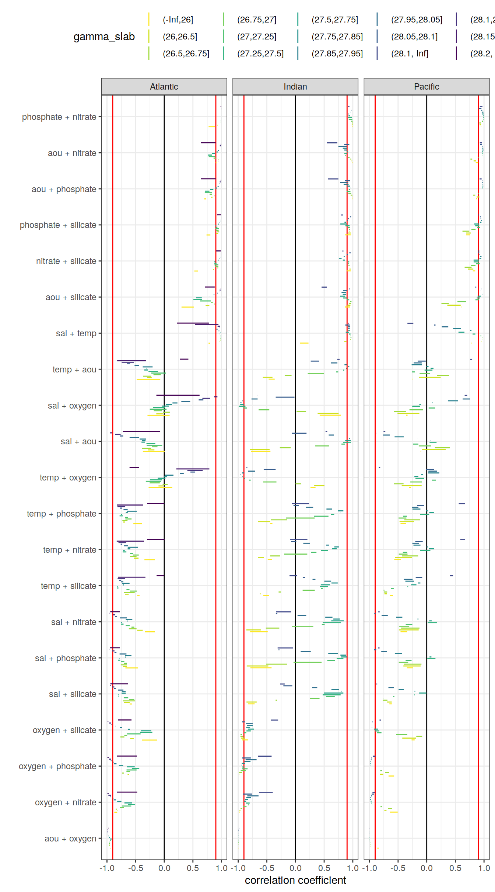

eMLR - assumption testing
Jens Daniel Müller
14 April, 2021
Last updated: 2021-04-14
Checks: 7 0
Knit directory: emlr_obs_v_XXX/
This reproducible R Markdown analysis was created with workflowr (version 1.6.2). The Checks tab describes the reproducibility checks that were applied when the results were created. The Past versions tab lists the development history.
Great! Since the R Markdown file has been committed to the Git repository, you know the exact version of the code that produced these results.
Great job! The global environment was empty. Objects defined in the global environment can affect the analysis in your R Markdown file in unknown ways. For reproduciblity it’s best to always run the code in an empty environment.
The command set.seed(20200707) was run prior to running the code in the R Markdown file. Setting a seed ensures that any results that rely on randomness, e.g. subsampling or permutations, are reproducible.
Great job! Recording the operating system, R version, and package versions is critical for reproducibility.
Nice! There were no cached chunks for this analysis, so you can be confident that you successfully produced the results during this run.
Great job! Using relative paths to the files within your workflowr project makes it easier to run your code on other machines.
Great! You are using Git for version control. Tracking code development and connecting the code version to the results is critical for reproducibility.
The results in this page were generated with repository version 6fcc01e. See the Past versions tab to see a history of the changes made to the R Markdown and HTML files.
Note that you need to be careful to ensure that all relevant files for the analysis have been committed to Git prior to generating the results (you can use wflow_publish or wflow_git_commit). workflowr only checks the R Markdown file, but you know if there are other scripts or data files that it depends on. Below is the status of the Git repository when the results were generated:
Ignored files:
Ignored: .Rhistory
Ignored: .Rproj.user/
Unstaged changes:
Modified: code/Workflowr_project_managment.R
Modified: data/auxillary/params_local.rds
Note that any generated files, e.g. HTML, png, CSS, etc., are not included in this status report because it is ok for generated content to have uncommitted changes.
These are the previous versions of the repository in which changes were made to the R Markdown (analysis/eMLR_assumption_testing.Rmd) and HTML (docs/eMLR_assumption_testing.html) files. If you’ve configured a remote Git repository (see ?wflow_git_remote), click on the hyperlinks in the table below to view the files as they were in that past version.
| File | Version | Author | Date | Message |
|---|---|---|---|---|
| html | bf40480 | jens-daniel-mueller | 2021-04-13 | Build site. |
| html | 9f31fe3 | jens-daniel-mueller | 2021-04-13 | Build site. |
| Rmd | 80e1ee3 | jens-daniel-mueller | 2021-04-13 | rerun post-2000 with model data |
| html | c98be84 | jens-daniel-mueller | 2021-04-13 | Build site. |
| html | ea17c90 | jens-daniel-mueller | 2021-04-09 | Build site. |
| Rmd | 4d61e3d | jens-daniel-mueller | 2021-04-09 | included model data |
| html | 338dd3c | jens-daniel-mueller | 2021-04-09 | Build site. |
| html | a79ca2c | jens-daniel-mueller | 2021-04-09 | included model data |
| html | 7831fd3 | jens-daniel-mueller | 2021-04-09 | Build site. |
| html | 20b26d4 | jens-daniel-mueller | 2021-04-08 | Build site. |
| html | c0895f8 | jens-daniel-mueller | 2021-04-07 | Build site. |
| html | 156d5b7 | jens-daniel-mueller | 2021-04-07 | Build site. |
| html | eb827c9 | jens-daniel-mueller | 2021-04-07 | Build site. |
| Rmd | 49be8ed | jens-daniel-mueller | 2021-03-26 | included model data |
| html | ab5c8cf | jens-daniel-mueller | 2021-03-24 | Build site. |
| Rmd | da3c481 | jens-daniel-mueller | 2021-03-24 | included model data |
| html | 19faa17 | jens-daniel-mueller | 2021-03-24 | Build site. |
| Rmd | ae3b4d7 | jens-daniel-mueller | 2021-03-24 | included model data |
| html | 03b6009 | jens-daniel-mueller | 2021-03-23 | removed before copying template |
| html | 98d4a6d | jens-daniel-mueller | 2021-03-23 | Build site. |
| html | f155edd | jens-daniel-mueller | 2021-03-23 | Build site. |
| html | 380d215 | jens-daniel-mueller | 2021-03-21 | Build site. |
| html | 33b385b | jens-daniel-mueller | 2021-03-20 | Build site. |
| html | 330dcd0 | jens-daniel-mueller | 2021-03-20 | Build site. |
| html | 83a13de | jens-daniel-mueller | 2021-03-20 | Build site. |
| html | cf98c6d | jens-daniel-mueller | 2021-03-16 | Build site. |
| html | a1d52ff | jens-daniel-mueller | 2021-03-15 | Build site. |
| html | 0bade3b | jens-daniel-mueller | 2021-03-15 | Build site. |
| html | 27c1f4b | jens-daniel-mueller | 2021-03-14 | Build site. |
| html | af75ebf | jens-daniel-mueller | 2021-03-14 | Build site. |
| html | 5017709 | jens-daniel-mueller | 2021-03-11 | Build site. |
| html | 585b07f | jens-daniel-mueller | 2021-03-11 | Build site. |
| html | 6482ed7 | jens-daniel-mueller | 2021-03-11 | Build site. |
| html | 85a5ed2 | jens-daniel-mueller | 2021-03-10 | Build site. |
| html | 00688a1 | jens-daniel-mueller | 2021-03-05 | Build site. |
| html | 6c0bec6 | jens-daniel-mueller | 2021-03-05 | Build site. |
| html | 3c2ec33 | jens-daniel-mueller | 2021-03-05 | Build site. |
| html | af70b94 | jens-daniel-mueller | 2021-03-04 | Build site. |
| html | 86406d5 | jens-daniel-mueller | 2021-02-24 | Build site. |
| html | 3d3b4cc | jens-daniel-mueller | 2021-02-23 | Build site. |
| html | 7b672f7 | jens-daniel-mueller | 2021-01-11 | Build site. |
| html | 33ba23c | jens-daniel-mueller | 2021-01-07 | Build site. |
| html | 318609d | jens-daniel-mueller | 2020-12-23 | adapted more variable predictor selection |
| html | 9d0b2d0 | jens-daniel-mueller | 2020-12-23 | Build site. |
| html | 0aa2b50 | jens-daniel-mueller | 2020-12-23 | remove html before duplication |
| html | 39113c3 | jens-daniel-mueller | 2020-12-23 | Build site. |
| html | 2886da0 | jens-daniel-mueller | 2020-12-19 | Build site. |
| html | 02f0ee9 | jens-daniel-mueller | 2020-12-18 | cleaned up for copying template |
| html | 965dba3 | jens-daniel-mueller | 2020-12-18 | Build site. |
| html | 5d452fe | jens-daniel-mueller | 2020-12-18 | Build site. |
| Rmd | ca65bf5 | jens-daniel-mueller | 2020-12-18 | rebuild after final cleaning |
| html | 7bcb4eb | jens-daniel-mueller | 2020-12-18 | Build site. |
| html | d397028 | jens-daniel-mueller | 2020-12-18 | Build site. |
| html | 7131186 | jens-daniel-mueller | 2020-12-17 | Build site. |
| html | 22b07fb | jens-daniel-mueller | 2020-12-17 | Build site. |
| html | f3a708f | jens-daniel-mueller | 2020-12-17 | Build site. |
| html | e4ca289 | jens-daniel-mueller | 2020-12-16 | Build site. |
| html | 158fe26 | jens-daniel-mueller | 2020-12-15 | Build site. |
| html | 7a9a4cb | jens-daniel-mueller | 2020-12-15 | Build site. |
| html | 61b263c | jens-daniel-mueller | 2020-12-15 | Build site. |
| html | 4d612dd | jens-daniel-mueller | 2020-12-15 | Build site. |
| Rmd | e7e5ff1 | jens-daniel-mueller | 2020-12-15 | rebuild with eMLR target variable selection |
| html | 953caf3 | jens-daniel-mueller | 2020-12-15 | Build site. |
| html | 42daf5c | jens-daniel-mueller | 2020-12-14 | Build site. |
| Rmd | 923aa7f | jens-daniel-mueller | 2020-12-14 | rebuild with new path and auto folder creation |
| html | 984697e | jens-daniel-mueller | 2020-12-12 | Build site. |
| html | 3ebff89 | jens-daniel-mueller | 2020-12-12 | Build site. |
| html | 5d96d3c | jens-daniel-mueller | 2020-12-11 | Build site. |
| Rmd | 3d33a37 | jens-daniel-mueller | 2020-12-11 | selectable basinmask, try 5 |
| html | b01a367 | jens-daniel-mueller | 2020-12-09 | Build site. |
| html | 24a632f | jens-daniel-mueller | 2020-12-07 | Build site. |
| html | 92dca91 | jens-daniel-mueller | 2020-12-07 | Build site. |
| html | 6a8004b | jens-daniel-mueller | 2020-12-07 | Build site. |
| html | 70bf1a5 | jens-daniel-mueller | 2020-12-07 | Build site. |
| html | 7555355 | jens-daniel-mueller | 2020-12-07 | Build site. |
| html | 143d6fa | jens-daniel-mueller | 2020-12-07 | Build site. |
| Rmd | 33b1973 | jens-daniel-mueller | 2020-12-07 | run with WOCE flag 2 only |
| html | abc6818 | jens-daniel-mueller | 2020-12-03 | Build site. |
| Rmd | 992ba15 | jens-daniel-mueller | 2020-12-03 | rebuild with variable inventory depth |
| html | c8c2e7b | jens-daniel-mueller | 2020-12-03 | Build site. |
| Rmd | 83203db | jens-daniel-mueller | 2020-12-03 | calculate cant with variable inventory depth |
| html | 090e4d5 | jens-daniel-mueller | 2020-12-02 | Build site. |
| html | 7c25f7a | jens-daniel-mueller | 2020-12-02 | Build site. |
| html | ec8dc38 | jens-daniel-mueller | 2020-12-02 | Build site. |
| html | c987de1 | jens-daniel-mueller | 2020-12-02 | Build site. |
| html | f8358f8 | jens-daniel-mueller | 2020-12-02 | Build site. |
| html | b03ddb8 | jens-daniel-mueller | 2020-12-02 | Build site. |
| Rmd | 9183e8f | jens-daniel-mueller | 2020-12-02 | revised assignment of era to eras |
| html | 22d0127 | jens-daniel-mueller | 2020-12-01 | Build site. |
| html | 0ff728b | jens-daniel-mueller | 2020-12-01 | Build site. |
| html | 91435ae | jens-daniel-mueller | 2020-12-01 | Build site. |
| Rmd | 17d09be | jens-daniel-mueller | 2020-12-01 | auto eras naming |
| html | cf19652 | jens-daniel-mueller | 2020-11-30 | Build site. |
| Rmd | 2842970 | jens-daniel-mueller | 2020-11-30 | cleaned for eMLR part only |
| html | 196be51 | jens-daniel-mueller | 2020-11-30 | Build site. |
| Rmd | 7a4b015 | jens-daniel-mueller | 2020-11-30 | first rebuild on ETH server |
| Rmd | bc61ce3 | Jens Müller | 2020-11-30 | Initial commit |
| html | bc61ce3 | Jens Müller | 2020-11-30 | Initial commit |
1 Required data
Required are:
- cleaned and prepared GLODAPv2.2020 file
GLODAP <-
read_csv(paste(path_version_data,
"GLODAPv2.2020_MLR_fitting_ready.csv",
sep = ""))2 Predictor correlation
The correlation between:
- pairs of seven potential predictor variables and
- C* and seven potential predictor variables
were investigated based on:
- property-property plots and
- calculated correlation coeffcients.
2.1 Correlation plots
For an overview, a random subset of data from all eras was plotted separately for both basins, with color indicating neutral density slabs (high density = dark-purple color).
plot_fun <- function(df){
ggpairs(
data = df,
columns = c(params_local$MLR_target,
params_local$MLR_predictors),
upper = "blank",
ggplot2::aes(col = gamma_slab, fill = gamma_slab, alpha = 0.01)
) +
scale_fill_viridis_d(direction = -1) +
scale_color_viridis_d(direction = -1) +
labs(title = paste(
"Basin:",
unique(df$basin),
"| era: all | random subsample:",
nrow(df),
"| data source:",
unique(df$data_source)
))
}
GLODAP %>%
slice_sample(n = 5e3) %>%
group_split(basin, data_source) %>%
map(plot_fun)[[1]]
| Version | Author | Date |
|---|---|---|
| 9f31fe3 | jens-daniel-mueller | 2021-04-13 |
| ea17c90 | jens-daniel-mueller | 2021-04-09 |
| 338dd3c | jens-daniel-mueller | 2021-04-09 |
| a79ca2c | jens-daniel-mueller | 2021-04-09 |
| eb827c9 | jens-daniel-mueller | 2021-04-07 |
| ab5c8cf | jens-daniel-mueller | 2021-03-24 |
| 03b6009 | jens-daniel-mueller | 2021-03-23 |
| 98d4a6d | jens-daniel-mueller | 2021-03-23 |
| 83a13de | jens-daniel-mueller | 2021-03-20 |
| cf98c6d | jens-daniel-mueller | 2021-03-16 |
| a1d52ff | jens-daniel-mueller | 2021-03-15 |
| 0bade3b | jens-daniel-mueller | 2021-03-15 |
| 27c1f4b | jens-daniel-mueller | 2021-03-14 |
| af75ebf | jens-daniel-mueller | 2021-03-14 |
| 5017709 | jens-daniel-mueller | 2021-03-11 |
| 585b07f | jens-daniel-mueller | 2021-03-11 |
| 85a5ed2 | jens-daniel-mueller | 2021-03-10 |
| 6c0bec6 | jens-daniel-mueller | 2021-03-05 |
| af70b94 | jens-daniel-mueller | 2021-03-04 |
| 7b672f7 | jens-daniel-mueller | 2021-01-11 |
| 33ba23c | jens-daniel-mueller | 2021-01-07 |
| 318609d | jens-daniel-mueller | 2020-12-23 |
| 9d0b2d0 | jens-daniel-mueller | 2020-12-23 |
| 0aa2b50 | jens-daniel-mueller | 2020-12-23 |
| 2886da0 | jens-daniel-mueller | 2020-12-19 |
| 02f0ee9 | jens-daniel-mueller | 2020-12-18 |
| 7bcb4eb | jens-daniel-mueller | 2020-12-18 |
| 158fe26 | jens-daniel-mueller | 2020-12-15 |
| 7a9a4cb | jens-daniel-mueller | 2020-12-15 |
| 61b263c | jens-daniel-mueller | 2020-12-15 |
| 4d612dd | jens-daniel-mueller | 2020-12-15 |
| 984697e | jens-daniel-mueller | 2020-12-12 |
| 3ebff89 | jens-daniel-mueller | 2020-12-12 |
| 5d96d3c | jens-daniel-mueller | 2020-12-11 |
[[2]]
| Version | Author | Date |
|---|---|---|
| 9f31fe3 | jens-daniel-mueller | 2021-04-13 |
| ea17c90 | jens-daniel-mueller | 2021-04-09 |
| 338dd3c | jens-daniel-mueller | 2021-04-09 |
| a79ca2c | jens-daniel-mueller | 2021-04-09 |
| eb827c9 | jens-daniel-mueller | 2021-04-07 |
| ab5c8cf | jens-daniel-mueller | 2021-03-24 |
| 03b6009 | jens-daniel-mueller | 2021-03-23 |
| 98d4a6d | jens-daniel-mueller | 2021-03-23 |
| 83a13de | jens-daniel-mueller | 2021-03-20 |
| cf98c6d | jens-daniel-mueller | 2021-03-16 |
| a1d52ff | jens-daniel-mueller | 2021-03-15 |
| 0bade3b | jens-daniel-mueller | 2021-03-15 |
| 27c1f4b | jens-daniel-mueller | 2021-03-14 |
| af75ebf | jens-daniel-mueller | 2021-03-14 |
| 5017709 | jens-daniel-mueller | 2021-03-11 |
| 585b07f | jens-daniel-mueller | 2021-03-11 |
| 85a5ed2 | jens-daniel-mueller | 2021-03-10 |
| 6c0bec6 | jens-daniel-mueller | 2021-03-05 |
| af70b94 | jens-daniel-mueller | 2021-03-04 |
| 7b672f7 | jens-daniel-mueller | 2021-01-11 |
| 33ba23c | jens-daniel-mueller | 2021-01-07 |
| 318609d | jens-daniel-mueller | 2020-12-23 |
| 9d0b2d0 | jens-daniel-mueller | 2020-12-23 |
| 0aa2b50 | jens-daniel-mueller | 2020-12-23 |
| 2886da0 | jens-daniel-mueller | 2020-12-19 |
| 02f0ee9 | jens-daniel-mueller | 2020-12-18 |
| 7bcb4eb | jens-daniel-mueller | 2020-12-18 |
| 158fe26 | jens-daniel-mueller | 2020-12-15 |
| 7a9a4cb | jens-daniel-mueller | 2020-12-15 |
| 61b263c | jens-daniel-mueller | 2020-12-15 |
| 4d612dd | jens-daniel-mueller | 2020-12-15 |
| 984697e | jens-daniel-mueller | 2020-12-12 |
| 3ebff89 | jens-daniel-mueller | 2020-12-12 |
| 5d96d3c | jens-daniel-mueller | 2020-12-11 |
[[3]]
| Version | Author | Date |
|---|---|---|
| bf40480 | jens-daniel-mueller | 2021-04-13 |
| 9f31fe3 | jens-daniel-mueller | 2021-04-13 |
| ea17c90 | jens-daniel-mueller | 2021-04-09 |
| 338dd3c | jens-daniel-mueller | 2021-04-09 |
| a79ca2c | jens-daniel-mueller | 2021-04-09 |
| eb827c9 | jens-daniel-mueller | 2021-04-07 |
| ab5c8cf | jens-daniel-mueller | 2021-03-24 |
| 0aa2b50 | jens-daniel-mueller | 2020-12-23 |
| 2886da0 | jens-daniel-mueller | 2020-12-19 |
| 02f0ee9 | jens-daniel-mueller | 2020-12-18 |
| 7bcb4eb | jens-daniel-mueller | 2020-12-18 |
| 158fe26 | jens-daniel-mueller | 2020-12-15 |
| 7a9a4cb | jens-daniel-mueller | 2020-12-15 |
| 61b263c | jens-daniel-mueller | 2020-12-15 |
| 4d612dd | jens-daniel-mueller | 2020-12-15 |
| 984697e | jens-daniel-mueller | 2020-12-12 |
| 3ebff89 | jens-daniel-mueller | 2020-12-12 |
| 5d96d3c | jens-daniel-mueller | 2020-12-11 |
[[4]]
| Version | Author | Date |
|---|---|---|
| bf40480 | jens-daniel-mueller | 2021-04-13 |
| 9f31fe3 | jens-daniel-mueller | 2021-04-13 |
| ea17c90 | jens-daniel-mueller | 2021-04-09 |
| 338dd3c | jens-daniel-mueller | 2021-04-09 |
| a79ca2c | jens-daniel-mueller | 2021-04-09 |
| eb827c9 | jens-daniel-mueller | 2021-04-07 |
| ab5c8cf | jens-daniel-mueller | 2021-03-24 |
| 984697e | jens-daniel-mueller | 2020-12-12 |
| 3ebff89 | jens-daniel-mueller | 2020-12-12 |
| 5d96d3c | jens-daniel-mueller | 2020-12-11 |
[[5]]
[[6]]
GLODAP <- GLODAP %>%
filter(data_source == "obs") %>%
select(-data_source)Individual correlation plots for each basin, era and neutral density (gamma) slab are available at:
/nfs/kryo/work/jenmueller/emlr_cant/observations/v_XXX/figures/Observations_correlation/
if (params_local$plot_all_figures == "y") {
for (i_basin in unique(GLODAP$basin)) {
for (i_era in unique(GLODAP$era)) {
# i_basin <- unique(GLODAP$basin)[1]
# i_era <- unique(GLODAP$era)[1]
GLODAP_basin_era <- GLODAP %>%
filter(basin == i_basin,
era == i_era)
for (i_gamma_slab in unique(GLODAP_basin_era$gamma_slab)) {
# i_gamma_slab <- unique(GLODAP_basin_era$gamma_slab)[5]
GLODAP_highlight <- GLODAP_basin_era %>%
mutate(gamma_highlight = if_else(gamma_slab == i_gamma_slab,
"in", "out")) %>%
arrange(desc(gamma_highlight))
p <- GLODAP_highlight %>%
ggpairs(
columns = c(params_local$MLR_target,
params_local$MLR_predictors),
ggplot2::aes(
col = gamma_highlight,
fill = gamma_highlight,
alpha = 0.01
)
) +
scale_fill_manual(values = c("red", "grey")) +
scale_color_manual(values = c("red", "grey")) +
labs(
title = paste(
i_era,
"|",
i_basin,
"| Gamma slab",
i_gamma_slab,
"| # obs total",
nrow(GLODAP_basin_era),
"| # obs slab",
nrow(GLODAP_highlight %>%
filter(gamma_highlight == "in"))
)
)
png(
filename = paste(
path_version_figures,
"Observations_correlation/",
paste(
"Predictor_correlation",
i_era,
i_basin,
i_gamma_slab,
".png",
sep = "_"
),
sep = ""),
width = 12,
height = 12,
units = "in",
res = 300
)
print(p)
dev.off()
}
}
}
}2.2 Correlation assesment
2.2.1 Calculation of correlation coeffcients
Correlation coefficients were calculated individually within each slabs, era and basin.
for (i_basin in unique(GLODAP$basin)) {
for (i_era in unique(GLODAP$era)) {
# i_basin <- unique(GLODAP$basin)[1]
# i_era <- unique(GLODAP$era)[1]
GLODAP_basin_era <- GLODAP %>%
filter(basin == i_basin,
era == i_era) %>%
select(basin,
era,
gamma_slab,
params_local$MLR_target,
params_local$MLR_predictors)
for (i_gamma_slab in unique(GLODAP_basin_era$gamma_slab)) {
# i_gamma_slab <- unique(GLODAP_basin_era$gamma_slab)[5]
print(i_gamma_slab)
GLODAP_basin_era_slab <- GLODAP_basin_era %>%
filter(gamma_slab == i_gamma_slab)
# calculate correlation table
cor_target_predictor_temp <- GLODAP_basin_era_slab %>%
select(-c(basin, era, gamma_slab)) %>%
correlate() %>%
focus(params_local$MLR_target) %>%
mutate(basin = i_basin,
era = i_era,
gamma_slab = i_gamma_slab)
if (exists("cor_target_predictor")) {
cor_target_predictor <-
bind_rows(cor_target_predictor, cor_target_predictor_temp)
}
if (!exists("cor_target_predictor")) {
cor_target_predictor <- cor_target_predictor_temp
}
cor_predictors_temp <- GLODAP_basin_era_slab %>%
select(-c(basin, era, gamma_slab)) %>%
correlate() %>%
shave %>%
stretch() %>%
filter(!is.na(r),
x != params_local$MLR_target,
y != params_local$MLR_target) %>%
mutate(pair = paste(x, y, sep = " + ")) %>%
select(-c(x, y)) %>%
mutate(basin = i_basin,
era = i_era,
gamma_slab = i_gamma_slab)
if (exists("cor_predictors")) {
cor_predictors <- bind_rows(cor_predictors, cor_predictors_temp)
}
if (!exists("cor_predictors")) {
cor_predictors <- cor_predictors_temp
}
}
}
}
rm(cor_predictors_temp, cor_target_predictor_temp,
i_gamma_slab, i_era, i_basin,
GLODAP_basin_era, GLODAP_basin_era_slab)2.2.2 Predictor pairs
Below, the range of correlations coefficients for each predictor pair is plotted per basin (facet) and density slab (color). Note that the range indicates the min and max values of in total 3 calculated coefficients (one per era).
# calculate min, max, mean across all eras
cor_predictors_stats <- cor_predictors %>%
group_by(pair, basin, gamma_slab) %>%
summarise(mean_r = mean(r),
min_r = min(r),
max_r = max(r)) %>%
ungroup()
# plot figure
cor_predictors_stats %>%
mutate(pair = reorder(pair, mean_r)) %>%
ggplot() +
geom_vline(xintercept = c(-0.9, 0.9), col = "red") +
geom_vline(xintercept = 0) +
geom_linerange(
aes(y = pair, xmin = min_r, xmax = max_r, col = gamma_slab),
position = position_dodge(width = 0.6)) +
facet_wrap(~basin) +
scale_color_viridis_d(direction = -1) +
labs(x = "correlation coefficient", y = "") +
theme(legend.position = "top")
| Version | Author | Date |
|---|---|---|
| bf40480 | jens-daniel-mueller | 2021-04-13 |
| 9f31fe3 | jens-daniel-mueller | 2021-04-13 |
| 338dd3c | jens-daniel-mueller | 2021-04-09 |
| a79ca2c | jens-daniel-mueller | 2021-04-09 |
| eb827c9 | jens-daniel-mueller | 2021-04-07 |
| 19faa17 | jens-daniel-mueller | 2021-03-24 |
| 03b6009 | jens-daniel-mueller | 2021-03-23 |
| 98d4a6d | jens-daniel-mueller | 2021-03-23 |
| f155edd | jens-daniel-mueller | 2021-03-23 |
| 83a13de | jens-daniel-mueller | 2021-03-20 |
| cf98c6d | jens-daniel-mueller | 2021-03-16 |
| a1d52ff | jens-daniel-mueller | 2021-03-15 |
| 0bade3b | jens-daniel-mueller | 2021-03-15 |
| 27c1f4b | jens-daniel-mueller | 2021-03-14 |
| af75ebf | jens-daniel-mueller | 2021-03-14 |
| 5017709 | jens-daniel-mueller | 2021-03-11 |
| 585b07f | jens-daniel-mueller | 2021-03-11 |
| 85a5ed2 | jens-daniel-mueller | 2021-03-10 |
| 6c0bec6 | jens-daniel-mueller | 2021-03-05 |
| 7b672f7 | jens-daniel-mueller | 2021-01-11 |
| 33ba23c | jens-daniel-mueller | 2021-01-07 |
| 318609d | jens-daniel-mueller | 2020-12-23 |
| 9d0b2d0 | jens-daniel-mueller | 2020-12-23 |
| 0aa2b50 | jens-daniel-mueller | 2020-12-23 |
| 2886da0 | jens-daniel-mueller | 2020-12-19 |
| 02f0ee9 | jens-daniel-mueller | 2020-12-18 |
| 158fe26 | jens-daniel-mueller | 2020-12-15 |
| 984697e | jens-daniel-mueller | 2020-12-12 |
| 3ebff89 | jens-daniel-mueller | 2020-12-12 |
| 5d96d3c | jens-daniel-mueller | 2020-12-11 |
| 24a632f | jens-daniel-mueller | 2020-12-07 |
| 6a8004b | jens-daniel-mueller | 2020-12-07 |
| 70bf1a5 | jens-daniel-mueller | 2020-12-07 |
| 7555355 | jens-daniel-mueller | 2020-12-07 |
| 143d6fa | jens-daniel-mueller | 2020-12-07 |
| 0ff728b | jens-daniel-mueller | 2020-12-01 |
| 91435ae | jens-daniel-mueller | 2020-12-01 |
| 196be51 | jens-daniel-mueller | 2020-11-30 |
| bc61ce3 | Jens Müller | 2020-11-30 |
# print table
kable(cor_predictors_stats) %>%
add_header_above() %>%
kable_styling() %>%
scroll_box(width = "100%", height = "400px")| pair | basin | gamma_slab | mean_r | min_r | max_r |
|---|---|---|---|---|---|
| aou + nitrate | Atlantic | (-Inf,26] | 0.8909097 | 0.8904837 | 0.8913358 |
| aou + nitrate | Atlantic | (26,26.5] | 0.8141032 | 0.7580427 | 0.8701637 |
| aou + nitrate | Atlantic | (26.5,26.75] | 0.9288444 | 0.9237912 | 0.9338975 |
| aou + nitrate | Atlantic | (26.75,27] | 0.9182394 | 0.9106820 | 0.9257969 |
| aou + nitrate | Atlantic | (27,27.25] | 0.8632557 | 0.8343233 | 0.8921880 |
| aou + nitrate | Atlantic | (27.25,27.5] | 0.7656924 | 0.7502862 | 0.7810986 |
| aou + nitrate | Atlantic | (27.5,27.75] | 0.8623614 | 0.8581469 | 0.8665759 |
| aou + nitrate | Atlantic | (27.75,27.85] | 0.9378212 | 0.9200744 | 0.9555679 |
| aou + nitrate | Atlantic | (27.85,27.95] | 0.9438072 | 0.9289916 | 0.9586227 |
| aou + nitrate | Atlantic | (27.95,28.05] | 0.9515767 | 0.9487750 | 0.9543784 |
| aou + nitrate | Atlantic | (28.05,28.1] | 0.9505738 | 0.9424518 | 0.9586959 |
| aou + nitrate | Atlantic | (28.1,28.15] | 0.9688302 | 0.9558831 | 0.9817774 |
| aou + nitrate | Atlantic | (28.15,28.2] | 0.9754428 | 0.9606165 | 0.9902691 |
| aou + nitrate | Atlantic | (28.2, Inf] | 0.8313507 | 0.7497529 | 0.9129484 |
| aou + nitrate | Indian | (-Inf,26] | 0.9945480 | 0.9933442 | 0.9957518 |
| aou + nitrate | Indian | (26,26.5] | 0.9926691 | 0.9894171 | 0.9959210 |
| aou + nitrate | Indian | (26.5,26.75] | 0.9739770 | 0.9723550 | 0.9755990 |
| aou + nitrate | Indian | (26.75,27] | 0.8741887 | 0.8188996 | 0.9294778 |
| aou + nitrate | Indian | (27,27.25] | 0.8466941 | 0.8404248 | 0.8529635 |
| aou + nitrate | Indian | (27.25,27.5] | 0.9100263 | 0.9019845 | 0.9180681 |
| aou + nitrate | Indian | (27.5,27.75] | 0.8919883 | 0.8860526 | 0.8979241 |
| aou + nitrate | Indian | (27.75,27.85] | 0.7507648 | 0.6945822 | 0.8069473 |
| aou + nitrate | Indian | (27.85,27.95] | 0.7960236 | 0.7758431 | 0.8162040 |
| aou + nitrate | Indian | (27.95,28.05] | 0.7349661 | 0.7124997 | 0.7574325 |
| aou + nitrate | Indian | (28.05,28.1] | 0.7242590 | 0.6827813 | 0.7657366 |
| aou + nitrate | Indian | (28.1,28.15] | 0.7255591 | 0.6548981 | 0.7962201 |
| aou + nitrate | Indian | (28.15,28.2] | 0.7062665 | 0.6230850 | 0.7894480 |
| aou + nitrate | Indian | (28.2, Inf] | 0.4322237 | 0.3959092 | 0.4685381 |
| aou + nitrate | Pacific | (-Inf,26] | 0.8777848 | 0.8378135 | 0.9177562 |
| aou + nitrate | Pacific | (26,26.5] | 0.8922759 | 0.8786791 | 0.9058727 |
| aou + nitrate | Pacific | (26.5,26.75] | 0.8851689 | 0.8716953 | 0.8986425 |
| aou + nitrate | Pacific | (26.75,27] | 0.9216821 | 0.9192567 | 0.9241075 |
| aou + nitrate | Pacific | (27,27.25] | 0.9720023 | 0.9700019 | 0.9740027 |
| aou + nitrate | Pacific | (27.25,27.5] | 0.9777763 | 0.9743571 | 0.9811956 |
| aou + nitrate | Pacific | (27.5,27.75] | 0.9810497 | 0.9809456 | 0.9811538 |
| aou + nitrate | Pacific | (27.75,27.85] | 0.9903525 | 0.9900375 | 0.9906675 |
| aou + nitrate | Pacific | (27.85,27.95] | 0.9898082 | 0.9883443 | 0.9912721 |
| aou + nitrate | Pacific | (27.95,28.05] | 0.9790206 | 0.9738129 | 0.9842284 |
| aou + nitrate | Pacific | (28.05,28.1] | 0.9718996 | 0.9644310 | 0.9793682 |
| aou + nitrate | Pacific | (28.1,28.15] | 0.9750608 | 0.9721511 | 0.9779704 |
| aou + nitrate | Pacific | (28.15,28.2] | 0.4860617 | 0.4222697 | 0.5498536 |
| aou + nitrate | Pacific | (28.2, Inf] | 0.3767578 | 0.2793134 | 0.4742022 |
| aou + phosphate | Atlantic | (-Inf,26] | 0.3609887 | 0.1193622 | 0.6026153 |
| aou + phosphate | Atlantic | (26,26.5] | 0.5583421 | 0.4538924 | 0.6627918 |
| aou + phosphate | Atlantic | (26.5,26.75] | 0.8341610 | 0.8226863 | 0.8456357 |
| aou + phosphate | Atlantic | (26.75,27] | 0.8461260 | 0.8390047 | 0.8532473 |
| aou + phosphate | Atlantic | (27,27.25] | 0.8068801 | 0.7826363 | 0.8311240 |
| aou + phosphate | Atlantic | (27.25,27.5] | 0.7109923 | 0.6812932 | 0.7406913 |
| aou + phosphate | Atlantic | (27.5,27.75] | 0.8368364 | 0.8334070 | 0.8402658 |
| aou + phosphate | Atlantic | (27.75,27.85] | 0.9238411 | 0.8998312 | 0.9478509 |
| aou + phosphate | Atlantic | (27.85,27.95] | 0.9376462 | 0.9226999 | 0.9525925 |
| aou + phosphate | Atlantic | (27.95,28.05] | 0.9472230 | 0.9443664 | 0.9500797 |
| aou + phosphate | Atlantic | (28.05,28.1] | 0.9433477 | 0.9357380 | 0.9509574 |
| aou + phosphate | Atlantic | (28.1,28.15] | 0.9646832 | 0.9524342 | 0.9769323 |
| aou + phosphate | Atlantic | (28.15,28.2] | 0.9745227 | 0.9594643 | 0.9895811 |
| aou + phosphate | Atlantic | (28.2, Inf] | 0.8259294 | 0.7427146 | 0.9091441 |
| aou + phosphate | Indian | (-Inf,26] | 0.9947811 | 0.9938501 | 0.9957120 |
| aou + phosphate | Indian | (26,26.5] | 0.9939308 | 0.9929904 | 0.9948712 |
| aou + phosphate | Indian | (26.5,26.75] | 0.9780358 | 0.9749381 | 0.9811336 |
| aou + phosphate | Indian | (26.75,27] | 0.8874992 | 0.8306647 | 0.9443337 |
| aou + phosphate | Indian | (27,27.25] | 0.8619616 | 0.8529427 | 0.8709805 |
| aou + phosphate | Indian | (27.25,27.5] | 0.9250154 | 0.9212177 | 0.9288130 |
| aou + phosphate | Indian | (27.5,27.75] | 0.9347294 | 0.9217216 | 0.9477373 |
| aou + phosphate | Indian | (27.75,27.85] | 0.8543233 | 0.8098941 | 0.8987525 |
| aou + phosphate | Indian | (27.85,27.95] | 0.8407211 | 0.8275055 | 0.8539368 |
| aou + phosphate | Indian | (27.95,28.05] | 0.7293244 | 0.6754965 | 0.7831523 |
| aou + phosphate | Indian | (28.05,28.1] | 0.7215626 | 0.6558946 | 0.7872306 |
| aou + phosphate | Indian | (28.1,28.15] | 0.6866298 | 0.5870025 | 0.7862570 |
| aou + phosphate | Indian | (28.15,28.2] | 0.6460510 | 0.6325206 | 0.6595815 |
| aou + phosphate | Indian | (28.2, Inf] | 0.3634268 | 0.3092776 | 0.4175760 |
| aou + phosphate | Pacific | (-Inf,26] | 0.9063315 | 0.8719708 | 0.9406922 |
| aou + phosphate | Pacific | (26,26.5] | 0.9501503 | 0.9479809 | 0.9523198 |
| aou + phosphate | Pacific | (26.5,26.75] | 0.9333586 | 0.9284288 | 0.9382885 |
| aou + phosphate | Pacific | (26.75,27] | 0.9292205 | 0.9269651 | 0.9314759 |
| aou + phosphate | Pacific | (27,27.25] | 0.9789456 | 0.9781542 | 0.9797370 |
| aou + phosphate | Pacific | (27.25,27.5] | 0.9829140 | 0.9815494 | 0.9842786 |
| aou + phosphate | Pacific | (27.5,27.75] | 0.9817144 | 0.9799727 | 0.9834562 |
| aou + phosphate | Pacific | (27.75,27.85] | 0.9872192 | 0.9863697 | 0.9880688 |
| aou + phosphate | Pacific | (27.85,27.95] | 0.9874069 | 0.9873395 | 0.9874743 |
| aou + phosphate | Pacific | (27.95,28.05] | 0.9815702 | 0.9790548 | 0.9840856 |
| aou + phosphate | Pacific | (28.05,28.1] | 0.9705560 | 0.9651406 | 0.9759715 |
| aou + phosphate | Pacific | (28.1,28.15] | 0.9650993 | 0.9586709 | 0.9715277 |
| aou + phosphate | Pacific | (28.15,28.2] | 0.3989187 | 0.3219186 | 0.4759188 |
| aou + phosphate | Pacific | (28.2, Inf] | 0.3636015 | 0.3617238 | 0.3654792 |
| aou + phosphate_star | Atlantic | (-Inf,26] | -0.4402215 | -0.6044535 | -0.2759894 |
| aou + phosphate_star | Atlantic | (26,26.5] | 0.0855334 | -0.0200626 | 0.1911294 |
| aou + phosphate_star | Atlantic | (26.5,26.75] | 0.4058663 | 0.3838155 | 0.4279172 |
| aou + phosphate_star | Atlantic | (26.75,27] | 0.2479509 | 0.2367739 | 0.2591278 |
| aou + phosphate_star | Atlantic | (27,27.25] | 0.2440331 | 0.2306661 | 0.2574001 |
| aou + phosphate_star | Atlantic | (27.25,27.5] | 0.2046412 | 0.1176173 | 0.2916650 |
| aou + phosphate_star | Atlantic | (27.5,27.75] | 0.5054866 | 0.4890671 | 0.5219062 |
| aou + phosphate_star | Atlantic | (27.75,27.85] | 0.6619314 | 0.5754930 | 0.7483699 |
| aou + phosphate_star | Atlantic | (27.85,27.95] | 0.6522152 | 0.5948794 | 0.7095509 |
| aou + phosphate_star | Atlantic | (27.95,28.05] | 0.7827808 | 0.7723747 | 0.7931869 |
| aou + phosphate_star | Atlantic | (28.05,28.1] | 0.7980171 | 0.7707598 | 0.8252743 |
| aou + phosphate_star | Atlantic | (28.1,28.15] | 0.8722619 | 0.8324901 | 0.9120336 |
| aou + phosphate_star | Atlantic | (28.15,28.2] | 0.9065646 | 0.8493909 | 0.9637382 |
| aou + phosphate_star | Atlantic | (28.2, Inf] | 0.5331892 | 0.3074007 | 0.7589776 |
| aou + phosphate_star | Indian | (-Inf,26] | 0.9382197 | 0.9369798 | 0.9394596 |
| aou + phosphate_star | Indian | (26,26.5] | 0.9340850 | 0.9087717 | 0.9593982 |
| aou + phosphate_star | Indian | (26.5,26.75] | 0.7153698 | 0.6970077 | 0.7337320 |
| aou + phosphate_star | Indian | (26.75,27] | 0.1674899 | 0.1446951 | 0.1902846 |
| aou + phosphate_star | Indian | (27,27.25] | -0.5579700 | -0.5877358 | -0.5282043 |
| aou + phosphate_star | Indian | (27.25,27.5] | -0.8337264 | -0.8456598 | -0.8217929 |
| aou + phosphate_star | Indian | (27.5,27.75] | -0.8974121 | -0.8985771 | -0.8962471 |
| aou + phosphate_star | Indian | (27.75,27.85] | -0.7152105 | -0.7571430 | -0.6732780 |
| aou + phosphate_star | Indian | (27.85,27.95] | -0.5069242 | -0.5831560 | -0.4306923 |
| aou + phosphate_star | Indian | (27.95,28.05] | -0.5267801 | -0.6555523 | -0.3980079 |
| aou + phosphate_star | Indian | (28.05,28.1] | -0.3848007 | -0.5453418 | -0.2242596 |
| aou + phosphate_star | Indian | (28.1,28.15] | -0.5334190 | -0.7043772 | -0.3624609 |
| aou + phosphate_star | Indian | (28.15,28.2] | -0.4842765 | -0.5609469 | -0.4076061 |
| aou + phosphate_star | Indian | (28.2, Inf] | -0.8968624 | -0.9156882 | -0.8780366 |
| aou + phosphate_star | Pacific | (-Inf,26] | 0.5954633 | 0.4817838 | 0.7091428 |
| aou + phosphate_star | Pacific | (26,26.5] | 0.5650678 | 0.5377329 | 0.5924026 |
| aou + phosphate_star | Pacific | (26.5,26.75] | 0.2147812 | 0.0751888 | 0.3543736 |
| aou + phosphate_star | Pacific | (26.75,27] | 0.1976173 | 0.1030201 | 0.2922145 |
| aou + phosphate_star | Pacific | (27,27.25] | 0.2024933 | 0.1900345 | 0.2149522 |
| aou + phosphate_star | Pacific | (27.25,27.5] | -0.4230712 | -0.4375877 | -0.4085548 |
| aou + phosphate_star | Pacific | (27.5,27.75] | -0.6845825 | -0.7230366 | -0.6461284 |
| aou + phosphate_star | Pacific | (27.75,27.85] | -0.6561670 | -0.7105314 | -0.6018026 |
| aou + phosphate_star | Pacific | (27.85,27.95] | -0.3540569 | -0.3965343 | -0.3115795 |
| aou + phosphate_star | Pacific | (27.95,28.05] | 0.2495646 | 0.2259317 | 0.2731975 |
| aou + phosphate_star | Pacific | (28.05,28.1] | 0.4904812 | 0.4230279 | 0.5579346 |
| aou + phosphate_star | Pacific | (28.1,28.15] | 0.5015491 | 0.4666406 | 0.5364575 |
| aou + phosphate_star | Pacific | (28.15,28.2] | -0.3611611 | -0.5233183 | -0.1990040 |
| aou + phosphate_star | Pacific | (28.2, Inf] | -0.7374500 | -0.7855509 | -0.6893491 |
| aou + silicate | Atlantic | (-Inf,26] | 0.0703547 | -0.0166151 | 0.1573245 |
| aou + silicate | Atlantic | (26,26.5] | 0.4920640 | 0.3590708 | 0.6250572 |
| aou + silicate | Atlantic | (26.5,26.75] | 0.7741444 | 0.6715004 | 0.8767884 |
| aou + silicate | Atlantic | (26.75,27] | 0.8139138 | 0.7582088 | 0.8696188 |
| aou + silicate | Atlantic | (27,27.25] | 0.7656464 | 0.7461639 | 0.7851288 |
| aou + silicate | Atlantic | (27.25,27.5] | 0.5122443 | 0.4449820 | 0.5795067 |
| aou + silicate | Atlantic | (27.5,27.75] | 0.6448105 | 0.6115334 | 0.6780876 |
| aou + silicate | Atlantic | (27.75,27.85] | 0.8428191 | 0.8260740 | 0.8595643 |
| aou + silicate | Atlantic | (27.85,27.95] | 0.8797850 | 0.8632034 | 0.8963667 |
| aou + silicate | Atlantic | (27.95,28.05] | 0.9333941 | 0.9296361 | 0.9371520 |
| aou + silicate | Atlantic | (28.05,28.1] | 0.9532795 | 0.9485068 | 0.9580522 |
| aou + silicate | Atlantic | (28.1,28.15] | 0.9729298 | 0.9697577 | 0.9761018 |
| aou + silicate | Atlantic | (28.15,28.2] | 0.9843285 | 0.9768205 | 0.9918365 |
| aou + silicate | Atlantic | (28.2, Inf] | 0.8389336 | 0.7506355 | 0.9272318 |
| aou + silicate | Indian | (-Inf,26] | 0.9667354 | 0.9565726 | 0.9768982 |
| aou + silicate | Indian | (26,26.5] | 0.9747745 | 0.9573081 | 0.9922409 |
| aou + silicate | Indian | (26.5,26.75] | 0.9816414 | 0.9722477 | 0.9910352 |
| aou + silicate | Indian | (26.75,27] | 0.9701617 | 0.9600605 | 0.9802629 |
| aou + silicate | Indian | (27,27.25] | 0.9398959 | 0.9255799 | 0.9542118 |
| aou + silicate | Indian | (27.25,27.5] | 0.9252867 | 0.9150459 | 0.9355274 |
| aou + silicate | Indian | (27.5,27.75] | 0.9202246 | 0.9062993 | 0.9341500 |
| aou + silicate | Indian | (27.75,27.85] | 0.9068758 | 0.8732280 | 0.9405237 |
| aou + silicate | Indian | (27.85,27.95] | 0.8508901 | 0.8445283 | 0.8572520 |
| aou + silicate | Indian | (27.95,28.05] | 0.8124328 | 0.7861232 | 0.8387425 |
| aou + silicate | Indian | (28.05,28.1] | 0.8924801 | 0.8690449 | 0.9159152 |
| aou + silicate | Indian | (28.1,28.15] | 0.9068282 | 0.8812523 | 0.9324040 |
| aou + silicate | Indian | (28.15,28.2] | 0.8595930 | 0.8536913 | 0.8654947 |
| aou + silicate | Indian | (28.2, Inf] | 0.4085000 | 0.2765367 | 0.5404632 |
| aou + silicate | Pacific | (-Inf,26] | 0.6395249 | 0.5387008 | 0.7403490 |
| aou + silicate | Pacific | (26,26.5] | 0.5878359 | 0.5610920 | 0.6145797 |
| aou + silicate | Pacific | (26.5,26.75] | 0.4483470 | 0.3643383 | 0.5323558 |
| aou + silicate | Pacific | (26.75,27] | 0.6299755 | 0.5701331 | 0.6898180 |
| aou + silicate | Pacific | (27,27.25] | 0.8932426 | 0.8738189 | 0.9126662 |
| aou + silicate | Pacific | (27.25,27.5] | 0.9180888 | 0.9018235 | 0.9343540 |
| aou + silicate | Pacific | (27.5,27.75] | 0.9346750 | 0.9201782 | 0.9491718 |
| aou + silicate | Pacific | (27.75,27.85] | 0.9700509 | 0.9646733 | 0.9754285 |
| aou + silicate | Pacific | (27.85,27.95] | 0.9646043 | 0.9629622 | 0.9662463 |
| aou + silicate | Pacific | (27.95,28.05] | 0.9415327 | 0.9348939 | 0.9481714 |
| aou + silicate | Pacific | (28.05,28.1] | 0.9293329 | 0.9267483 | 0.9319175 |
| aou + silicate | Pacific | (28.1,28.15] | 0.9677590 | 0.9599362 | 0.9755818 |
| aou + silicate | Pacific | (28.15,28.2] | 0.1764805 | -0.0033540 | 0.3563149 |
| aou + silicate | Pacific | (28.2, Inf] | 0.5763200 | 0.5163852 | 0.6362548 |
| nitrate + phosphate | Atlantic | (-Inf,26] | 0.6169470 | 0.4148117 | 0.8190823 |
| nitrate + phosphate | Atlantic | (26,26.5] | 0.8829057 | 0.8479940 | 0.9178173 |
| nitrate + phosphate | Atlantic | (26.5,26.75] | 0.9685404 | 0.9644487 | 0.9726321 |
| nitrate + phosphate | Atlantic | (26.75,27] | 0.9818171 | 0.9817942 | 0.9818400 |
| nitrate + phosphate | Atlantic | (27,27.25] | 0.9879609 | 0.9873721 | 0.9885497 |
| nitrate + phosphate | Atlantic | (27.25,27.5] | 0.9912860 | 0.9911883 | 0.9913837 |
| nitrate + phosphate | Atlantic | (27.5,27.75] | 0.9913736 | 0.9876183 | 0.9951290 |
| nitrate + phosphate | Atlantic | (27.75,27.85] | 0.9926409 | 0.9901114 | 0.9951704 |
| nitrate + phosphate | Atlantic | (27.85,27.95] | 0.9885417 | 0.9840130 | 0.9930704 |
| nitrate + phosphate | Atlantic | (27.95,28.05] | 0.9903084 | 0.9866555 | 0.9939613 |
| nitrate + phosphate | Atlantic | (28.05,28.1] | 0.9908467 | 0.9881682 | 0.9935252 |
| nitrate + phosphate | Atlantic | (28.1,28.15] | 0.9957954 | 0.9948813 | 0.9967094 |
| nitrate + phosphate | Atlantic | (28.15,28.2] | 0.9976258 | 0.9967596 | 0.9984921 |
| nitrate + phosphate | Atlantic | (28.2, Inf] | 0.9956748 | 0.9951112 | 0.9962384 |
| nitrate + phosphate | Indian | (-Inf,26] | 0.9984665 | 0.9973838 | 0.9995492 |
| nitrate + phosphate | Indian | (26,26.5] | 0.9983125 | 0.9971918 | 0.9994331 |
| nitrate + phosphate | Indian | (26.5,26.75] | 0.9984957 | 0.9976888 | 0.9993027 |
| nitrate + phosphate | Indian | (26.75,27] | 0.9963819 | 0.9956134 | 0.9971505 |
| nitrate + phosphate | Indian | (27,27.25] | 0.9928110 | 0.9894658 | 0.9961563 |
| nitrate + phosphate | Indian | (27.25,27.5] | 0.9855272 | 0.9777771 | 0.9932773 |
| nitrate + phosphate | Indian | (27.5,27.75] | 0.9491627 | 0.9331299 | 0.9651956 |
| nitrate + phosphate | Indian | (27.75,27.85] | 0.9261015 | 0.9058064 | 0.9463966 |
| nitrate + phosphate | Indian | (27.85,27.95] | 0.9570444 | 0.9479613 | 0.9661275 |
| nitrate + phosphate | Indian | (27.95,28.05] | 0.9775642 | 0.9743431 | 0.9807852 |
| nitrate + phosphate | Indian | (28.05,28.1] | 0.9795729 | 0.9749159 | 0.9842299 |
| nitrate + phosphate | Indian | (28.1,28.15] | 0.9651951 | 0.9641880 | 0.9662022 |
| nitrate + phosphate | Indian | (28.15,28.2] | 0.8617538 | 0.8433747 | 0.8801328 |
| nitrate + phosphate | Indian | (28.2, Inf] | 0.7150449 | 0.6801460 | 0.7499438 |
| nitrate + phosphate | Pacific | (-Inf,26] | 0.9553276 | 0.9368020 | 0.9738532 |
| nitrate + phosphate | Pacific | (26,26.5] | 0.9474233 | 0.9402652 | 0.9545813 |
| nitrate + phosphate | Pacific | (26.5,26.75] | 0.9371125 | 0.9350351 | 0.9391899 |
| nitrate + phosphate | Pacific | (26.75,27] | 0.9751524 | 0.9716137 | 0.9786912 |
| nitrate + phosphate | Pacific | (27,27.25] | 0.9890337 | 0.9872923 | 0.9907751 |
| nitrate + phosphate | Pacific | (27.25,27.5] | 0.9909208 | 0.9889223 | 0.9929194 |
| nitrate + phosphate | Pacific | (27.5,27.75] | 0.9924152 | 0.9915983 | 0.9932320 |
| nitrate + phosphate | Pacific | (27.75,27.85] | 0.9920863 | 0.9919114 | 0.9922613 |
| nitrate + phosphate | Pacific | (27.85,27.95] | 0.9910282 | 0.9884535 | 0.9936028 |
| nitrate + phosphate | Pacific | (27.95,28.05] | 0.9787299 | 0.9660808 | 0.9913790 |
| nitrate + phosphate | Pacific | (28.05,28.1] | 0.9698586 | 0.9560096 | 0.9837076 |
| nitrate + phosphate | Pacific | (28.1,28.15] | 0.9714629 | 0.9676195 | 0.9753064 |
| nitrate + phosphate | Pacific | (28.15,28.2] | 0.5061530 | 0.4471391 | 0.5651669 |
| nitrate + phosphate | Pacific | (28.2, Inf] | 0.4933520 | 0.4862564 | 0.5004476 |
| nitrate + phosphate_star | Atlantic | (-Inf,26] | -0.1099088 | -0.2932368 | 0.0734193 |
| nitrate + phosphate_star | Atlantic | (26,26.5] | 0.5834769 | 0.5506494 | 0.6163043 |
| nitrate + phosphate_star | Atlantic | (26.5,26.75] | 0.6965777 | 0.6839681 | 0.7091873 |
| nitrate + phosphate_star | Atlantic | (26.75,27] | 0.6000837 | 0.5778629 | 0.6223045 |
| nitrate + phosphate_star | Atlantic | (27,27.25] | 0.6866300 | 0.6386972 | 0.7345627 |
| nitrate + phosphate_star | Atlantic | (27.25,27.5] | 0.7757290 | 0.7364430 | 0.8150150 |
| nitrate + phosphate_star | Atlantic | (27.5,27.75] | 0.8558482 | 0.8444997 | 0.8671967 |
| nitrate + phosphate_star | Atlantic | (27.75,27.85] | 0.8651378 | 0.8337559 | 0.8965197 |
| nitrate + phosphate_star | Atlantic | (27.85,27.95] | 0.8428914 | 0.8209593 | 0.8648235 |
| nitrate + phosphate_star | Atlantic | (27.95,28.05] | 0.9175326 | 0.9090706 | 0.9259947 |
| nitrate + phosphate_star | Atlantic | (28.05,28.1] | 0.9306555 | 0.9203228 | 0.9409883 |
| nitrate + phosphate_star | Atlantic | (28.1,28.15] | 0.9580666 | 0.9490643 | 0.9670689 |
| nitrate + phosphate_star | Atlantic | (28.15,28.2] | 0.9722343 | 0.9563081 | 0.9881606 |
| nitrate + phosphate_star | Atlantic | (28.2, Inf] | 0.9020701 | 0.8523494 | 0.9517907 |
| nitrate + phosphate_star | Indian | (-Inf,26] | 0.9644666 | 0.9639605 | 0.9649726 |
| nitrate + phosphate_star | Indian | (26,26.5] | 0.9653895 | 0.9517545 | 0.9790244 |
| nitrate + phosphate_star | Indian | (26.5,26.75] | 0.8504881 | 0.8304398 | 0.8705364 |
| nitrate + phosphate_star | Indian | (26.75,27] | 0.6037883 | 0.4915859 | 0.7159907 |
| nitrate + phosphate_star | Indian | (27,27.25] | -0.0392432 | -0.0907088 | 0.0122224 |
| nitrate + phosphate_star | Indian | (27.25,27.5] | -0.5464103 | -0.5742858 | -0.5185348 |
| nitrate + phosphate_star | Indian | (27.5,27.75] | -0.6492128 | -0.6783288 | -0.6200968 |
| nitrate + phosphate_star | Indian | (27.75,27.85] | -0.1531256 | -0.3264534 | 0.0202021 |
| nitrate + phosphate_star | Indian | (27.85,27.95] | 0.0500595 | -0.0795080 | 0.1796270 |
| nitrate + phosphate_star | Indian | (27.95,28.05] | 0.1544297 | 0.0442709 | 0.2645884 |
| nitrate + phosphate_star | Indian | (28.05,28.1] | 0.3246536 | 0.2269163 | 0.4223910 |
| nitrate + phosphate_star | Indian | (28.1,28.15] | 0.1439028 | 0.0561343 | 0.2316714 |
| nitrate + phosphate_star | Indian | (28.15,28.2] | 0.1400921 | -0.0245779 | 0.3047621 |
| nitrate + phosphate_star | Indian | (28.2, Inf] | -0.1047804 | -0.1489790 | -0.0605818 |
| nitrate + phosphate_star | Pacific | (-Inf,26] | 0.8622592 | 0.8241379 | 0.9003805 |
| nitrate + phosphate_star | Pacific | (26,26.5] | 0.7871171 | 0.7600379 | 0.8141964 |
| nitrate + phosphate_star | Pacific | (26.5,26.75] | 0.5067358 | 0.3568072 | 0.6566645 |
| nitrate + phosphate_star | Pacific | (26.75,27] | 0.5021308 | 0.4066862 | 0.5975754 |
| nitrate + phosphate_star | Pacific | (27,27.25] | 0.3810059 | 0.3710647 | 0.3909472 |
| nitrate + phosphate_star | Pacific | (27.25,27.5] | -0.2697822 | -0.2730120 | -0.2665524 |
| nitrate + phosphate_star | Pacific | (27.5,27.75] | -0.5640510 | -0.6063590 | -0.5217431 |
| nitrate + phosphate_star | Pacific | (27.75,27.85] | -0.5851424 | -0.6424929 | -0.5277918 |
| nitrate + phosphate_star | Pacific | (27.85,27.95] | -0.2738919 | -0.3104922 | -0.2372917 |
| nitrate + phosphate_star | Pacific | (27.95,28.05] | 0.3393554 | 0.2836872 | 0.3950236 |
| nitrate + phosphate_star | Pacific | (28.05,28.1] | 0.5847210 | 0.5086272 | 0.6608149 |
| nitrate + phosphate_star | Pacific | (28.1,28.15] | 0.5996113 | 0.5742756 | 0.6249469 |
| nitrate + phosphate_star | Pacific | (28.15,28.2] | 0.1556060 | 0.1222083 | 0.1890037 |
| nitrate + phosphate_star | Pacific | (28.2, Inf] | -0.0025946 | -0.1285565 | 0.1233673 |
| nitrate + silicate | Atlantic | (-Inf,26] | 0.3771982 | 0.3404367 | 0.4139597 |
| nitrate + silicate | Atlantic | (26,26.5] | 0.8149315 | 0.7562135 | 0.8736496 |
| nitrate + silicate | Atlantic | (26.5,26.75] | 0.8978903 | 0.8207457 | 0.9750348 |
| nitrate + silicate | Atlantic | (26.75,27] | 0.9142439 | 0.8739228 | 0.9545650 |
| nitrate + silicate | Atlantic | (27,27.25] | 0.9317205 | 0.9268380 | 0.9366030 |
| nitrate + silicate | Atlantic | (27.25,27.5] | 0.8819607 | 0.8589999 | 0.9049214 |
| nitrate + silicate | Atlantic | (27.5,27.75] | 0.8849028 | 0.8726605 | 0.8971451 |
| nitrate + silicate | Atlantic | (27.75,27.85] | 0.9492710 | 0.9479569 | 0.9505850 |
| nitrate + silicate | Atlantic | (27.85,27.95] | 0.9683791 | 0.9675883 | 0.9691700 |
| nitrate + silicate | Atlantic | (27.95,28.05] | 0.9798440 | 0.9796727 | 0.9800153 |
| nitrate + silicate | Atlantic | (28.05,28.1] | 0.9877168 | 0.9859062 | 0.9895274 |
| nitrate + silicate | Atlantic | (28.1,28.15] | 0.9906928 | 0.9891664 | 0.9922191 |
| nitrate + silicate | Atlantic | (28.15,28.2] | 0.9916258 | 0.9876090 | 0.9956426 |
| nitrate + silicate | Atlantic | (28.2, Inf] | 0.9728272 | 0.9614393 | 0.9842151 |
| nitrate + silicate | Indian | (-Inf,26] | 0.9773580 | 0.9634174 | 0.9912987 |
| nitrate + silicate | Indian | (26,26.5] | 0.9782852 | 0.9609271 | 0.9956432 |
| nitrate + silicate | Indian | (26.5,26.75] | 0.9728581 | 0.9636490 | 0.9820671 |
| nitrate + silicate | Indian | (26.75,27] | 0.8681375 | 0.8032910 | 0.9329840 |
| nitrate + silicate | Indian | (27,27.25] | 0.9311643 | 0.9263985 | 0.9359301 |
| nitrate + silicate | Indian | (27.25,27.5] | 0.9482777 | 0.9355038 | 0.9610517 |
| nitrate + silicate | Indian | (27.5,27.75] | 0.8838299 | 0.8649725 | 0.9026874 |
| nitrate + silicate | Indian | (27.75,27.85] | 0.7537464 | 0.7390574 | 0.7684354 |
| nitrate + silicate | Indian | (27.85,27.95] | 0.7764464 | 0.7114358 | 0.8414571 |
| nitrate + silicate | Indian | (27.95,28.05] | 0.8412817 | 0.7968115 | 0.8857520 |
| nitrate + silicate | Indian | (28.05,28.1] | 0.8909502 | 0.8735325 | 0.9083678 |
| nitrate + silicate | Indian | (28.1,28.15] | 0.8558715 | 0.8186590 | 0.8930839 |
| nitrate + silicate | Indian | (28.15,28.2] | 0.7519490 | 0.7224729 | 0.7814251 |
| nitrate + silicate | Indian | (28.2, Inf] | 0.6002534 | 0.5830507 | 0.6174562 |
| nitrate + silicate | Pacific | (-Inf,26] | 0.8599842 | 0.8323851 | 0.8875832 |
| nitrate + silicate | Pacific | (26,26.5] | 0.7764506 | 0.7440693 | 0.8088319 |
| nitrate + silicate | Pacific | (26.5,26.75] | 0.6691159 | 0.5720769 | 0.7661549 |
| nitrate + silicate | Pacific | (26.75,27] | 0.7748412 | 0.7190829 | 0.8305995 |
| nitrate + silicate | Pacific | (27,27.25] | 0.9023481 | 0.8812972 | 0.9233991 |
| nitrate + silicate | Pacific | (27.25,27.5] | 0.8883492 | 0.8691928 | 0.9075056 |
| nitrate + silicate | Pacific | (27.5,27.75] | 0.8955002 | 0.8797879 | 0.9112125 |
| nitrate + silicate | Pacific | (27.75,27.85] | 0.9484961 | 0.9440626 | 0.9529296 |
| nitrate + silicate | Pacific | (27.85,27.95] | 0.9573961 | 0.9542112 | 0.9605811 |
| nitrate + silicate | Pacific | (27.95,28.05] | 0.9326454 | 0.9049492 | 0.9603416 |
| nitrate + silicate | Pacific | (28.05,28.1] | 0.9317232 | 0.9137898 | 0.9496566 |
| nitrate + silicate | Pacific | (28.1,28.15] | 0.9741829 | 0.9703149 | 0.9780509 |
| nitrate + silicate | Pacific | (28.15,28.2] | 0.3735686 | 0.2703508 | 0.4767864 |
| nitrate + silicate | Pacific | (28.2, Inf] | 0.5417388 | 0.4359335 | 0.6475441 |
| phosphate + phosphate_star | Atlantic | (-Inf,26] | 0.6479286 | 0.5873871 | 0.7084701 |
| phosphate + phosphate_star | Atlantic | (26,26.5] | 0.8695030 | 0.8595273 | 0.8794788 |
| phosphate + phosphate_star | Atlantic | (26.5,26.75] | 0.8411008 | 0.8384190 | 0.8437826 |
| phosphate + phosphate_star | Atlantic | (26.75,27] | 0.7252309 | 0.7083369 | 0.7421249 |
| phosphate + phosphate_star | Atlantic | (27,27.25] | 0.7672288 | 0.7323351 | 0.8021225 |
| phosphate + phosphate_star | Atlantic | (27.25,27.5] | 0.8315409 | 0.8055027 | 0.8575791 |
| phosphate + phosphate_star | Atlantic | (27.5,27.75] | 0.8919904 | 0.8857201 | 0.8982608 |
| phosphate + phosphate_star | Atlantic | (27.75,27.85] | 0.8952614 | 0.8720915 | 0.9184314 |
| phosphate + phosphate_star | Atlantic | (27.85,27.95] | 0.8723117 | 0.8558530 | 0.8887704 |
| phosphate + phosphate_star | Atlantic | (27.95,28.05] | 0.9387571 | 0.9355632 | 0.9419510 |
| phosphate + phosphate_star | Atlantic | (28.05,28.1] | 0.9515270 | 0.9446391 | 0.9584149 |
| phosphate + phosphate_star | Atlantic | (28.1,28.15] | 0.9695357 | 0.9610594 | 0.9780119 |
| phosphate + phosphate_star | Atlantic | (28.15,28.2] | 0.9775291 | 0.9633206 | 0.9917376 |
| phosphate + phosphate_star | Atlantic | (28.2, Inf] | 0.9121465 | 0.8642497 | 0.9600433 |
| phosphate + phosphate_star | Indian | (-Inf,26] | 0.9675694 | 0.9655666 | 0.9695721 |
| phosphate + phosphate_star | Indian | (26,26.5] | 0.9668889 | 0.9510555 | 0.9827223 |
| phosphate + phosphate_star | Indian | (26.5,26.75] | 0.8439211 | 0.8216846 | 0.8661576 |
| phosphate + phosphate_star | Indian | (26.75,27] | 0.5827602 | 0.4613063 | 0.7042142 |
| phosphate + phosphate_star | Indian | (27,27.25] | -0.0617356 | -0.1154270 | -0.0080443 |
| phosphate + phosphate_star | Indian | (27.25,27.5] | -0.5637360 | -0.5726249 | -0.5548470 |
| phosphate + phosphate_star | Indian | (27.5,27.75] | -0.6909901 | -0.7201627 | -0.6618175 |
| phosphate + phosphate_star | Indian | (27.75,27.85] | -0.2576703 | -0.3993955 | -0.1159452 |
| phosphate + phosphate_star | Indian | (27.85,27.95] | 0.0325624 | -0.0792275 | 0.1443522 |
| phosphate + phosphate_star | Indian | (27.95,28.05] | 0.1838846 | 0.1119674 | 0.2558017 |
| phosphate + phosphate_star | Indian | (28.05,28.1] | 0.3477989 | 0.2737404 | 0.4218574 |
| phosphate + phosphate_star | Indian | (28.1,28.15] | 0.2232081 | 0.1596450 | 0.2867713 |
| phosphate + phosphate_star | Indian | (28.15,28.2] | 0.3446891 | 0.2473398 | 0.4420384 |
| phosphate + phosphate_star | Indian | (28.2, Inf] | 0.0778487 | 0.0621043 | 0.0935932 |
| phosphate + phosphate_star | Pacific | (-Inf,26] | 0.8602272 | 0.8250738 | 0.8953805 |
| phosphate + phosphate_star | Pacific | (26,26.5] | 0.7909435 | 0.7665752 | 0.8153118 |
| phosphate + phosphate_star | Pacific | (26.5,26.75] | 0.5426333 | 0.4114490 | 0.6738176 |
| phosphate + phosphate_star | Pacific | (26.75,27] | 0.5405304 | 0.4540960 | 0.6269648 |
| phosphate + phosphate_star | Pacific | (27,27.25] | 0.3929568 | 0.3765405 | 0.4093731 |
| phosphate + phosphate_star | Pacific | (27.25,27.5] | -0.2639312 | -0.2759164 | -0.2519459 |
| phosphate + phosphate_star | Pacific | (27.5,27.75] | -0.5500304 | -0.5905650 | -0.5094957 |
| phosphate + phosphate_star | Pacific | (27.75,27.85] | -0.5381778 | -0.5996683 | -0.4766873 |
| phosphate + phosphate_star | Pacific | (27.85,27.95] | -0.2100116 | -0.2569735 | -0.1630497 |
| phosphate + phosphate_star | Pacific | (27.95,28.05] | 0.4244665 | 0.4150324 | 0.4339005 |
| phosphate + phosphate_star | Pacific | (28.05,28.1] | 0.6826393 | 0.6427111 | 0.7225675 |
| phosphate + phosphate_star | Pacific | (28.1,28.15] | 0.7075493 | 0.6966090 | 0.7184895 |
| phosphate + phosphate_star | Pacific | (28.15,28.2] | 0.6921960 | 0.6248461 | 0.7595460 |
| phosphate + phosphate_star | Pacific | (28.2, Inf] | 0.3408817 | 0.2717902 | 0.4099731 |
| sal + aou | Atlantic | (-Inf,26] | 0.4032204 | 0.2567048 | 0.5497360 |
| sal + aou | Atlantic | (26,26.5] | -0.0098030 | -0.0565613 | 0.0369554 |
| sal + aou | Atlantic | (26.5,26.75] | -0.3043813 | -0.3217624 | -0.2870002 |
| sal + aou | Atlantic | (26.75,27] | -0.1912187 | -0.2057287 | -0.1767087 |
| sal + aou | Atlantic | (27,27.25] | -0.2436167 | -0.2456854 | -0.2415479 |
| sal + aou | Atlantic | (27.25,27.5] | -0.1762894 | -0.2509340 | -0.1016449 |
| sal + aou | Atlantic | (27.5,27.75] | -0.3299153 | -0.3904873 | -0.2693433 |
| sal + aou | Atlantic | (27.75,27.85] | -0.3600378 | -0.4570092 | -0.2630663 |
| sal + aou | Atlantic | (27.85,27.95] | -0.2784368 | -0.3738936 | -0.1829800 |
| sal + aou | Atlantic | (27.95,28.05] | -0.5758630 | -0.6157412 | -0.5359847 |
| sal + aou | Atlantic | (28.05,28.1] | -0.6347237 | -0.6887268 | -0.5807206 |
| sal + aou | Atlantic | (28.1,28.15] | -0.7746024 | -0.8213622 | -0.7278425 |
| sal + aou | Atlantic | (28.15,28.2] | -0.8469924 | -0.9289304 | -0.7650545 |
| sal + aou | Atlantic | (28.2, Inf] | -0.5940550 | -0.7549900 | -0.4331199 |
| sal + aou | Indian | (-Inf,26] | -0.8995166 | -0.9833460 | -0.8156872 |
| sal + aou | Indian | (26,26.5] | -0.8928727 | -0.9656668 | -0.8200786 |
| sal + aou | Indian | (26.5,26.75] | -0.6134442 | -0.7508876 | -0.4760008 |
| sal + aou | Indian | (26.75,27] | 0.1023296 | -0.1140701 | 0.3187293 |
| sal + aou | Indian | (27,27.25] | 0.8412315 | 0.8039250 | 0.8785380 |
| sal + aou | Indian | (27.25,27.5] | 0.9736827 | 0.9718535 | 0.9755118 |
| sal + aou | Indian | (27.5,27.75] | 0.9639949 | 0.9579596 | 0.9700301 |
| sal + aou | Indian | (27.75,27.85] | 0.8826241 | 0.8488013 | 0.9164469 |
| sal + aou | Indian | (27.85,27.95] | 0.7275516 | 0.6202475 | 0.8348556 |
| sal + aou | Indian | (27.95,28.05] | 0.6757974 | 0.6179509 | 0.7336439 |
| sal + aou | Indian | (28.05,28.1] | 0.5343633 | 0.4228595 | 0.6458670 |
| sal + aou | Indian | (28.1,28.15] | 0.6104997 | 0.4516379 | 0.7693615 |
| sal + aou | Indian | (28.15,28.2] | 0.4912574 | 0.4843061 | 0.4982088 |
| sal + aou | Indian | (28.2, Inf] | 0.8878254 | 0.8477680 | 0.9278828 |
| sal + aou | Pacific | (-Inf,26] | -0.0888750 | -0.1523970 | -0.0253530 |
| sal + aou | Pacific | (26,26.5] | 0.0025419 | -0.1281923 | 0.1332762 |
| sal + aou | Pacific | (26.5,26.75] | 0.1858787 | -0.0452225 | 0.4169799 |
| sal + aou | Pacific | (26.75,27] | -0.0235202 | -0.1518255 | 0.1047852 |
| sal + aou | Pacific | (27,27.25] | -0.2285421 | -0.2647523 | -0.1923318 |
| sal + aou | Pacific | (27.25,27.5] | -0.0344076 | -0.0609392 | -0.0078759 |
| sal + aou | Pacific | (27.5,27.75] | -0.1148709 | -0.1150872 | -0.1146547 |
| sal + aou | Pacific | (27.75,27.85] | -0.3351306 | -0.5026716 | -0.1675896 |
| sal + aou | Pacific | (27.85,27.95] | -0.5060478 | -0.6374675 | -0.3746281 |
| sal + aou | Pacific | (27.95,28.05] | -0.7018173 | -0.7811292 | -0.6225053 |
| sal + aou | Pacific | (28.05,28.1] | -0.7990368 | -0.8135814 | -0.7844921 |
| sal + aou | Pacific | (28.1,28.15] | -0.8030223 | -0.8808516 | -0.7251929 |
| sal + aou | Pacific | (28.15,28.2] | 0.4615409 | 0.2375210 | 0.6855608 |
| sal + aou | Pacific | (28.2, Inf] | 0.9001078 | 0.8991386 | 0.9010769 |
| sal + nitrate | Atlantic | (-Inf,26] | 0.1119916 | 0.0010965 | 0.2228866 |
| sal + nitrate | Atlantic | (26,26.5] | -0.4654718 | -0.4772264 | -0.4537171 |
| sal + nitrate | Atlantic | (26.5,26.75] | -0.5939156 | -0.6102883 | -0.5775429 |
| sal + nitrate | Atlantic | (26.75,27] | -0.5403265 | -0.5426027 | -0.5380502 |
| sal + nitrate | Atlantic | (27,27.25] | -0.6739672 | -0.7117342 | -0.6362002 |
| sal + nitrate | Atlantic | (27.25,27.5] | -0.7315238 | -0.7705397 | -0.6925079 |
| sal + nitrate | Atlantic | (27.5,27.75] | -0.6788015 | -0.7298379 | -0.6277650 |
| sal + nitrate | Atlantic | (27.75,27.85] | -0.5842892 | -0.6162160 | -0.5523623 |
| sal + nitrate | Atlantic | (27.85,27.95] | -0.5155769 | -0.5714119 | -0.4597420 |
| sal + nitrate | Atlantic | (27.95,28.05] | -0.7413839 | -0.7719527 | -0.7108150 |
| sal + nitrate | Atlantic | (28.05,28.1] | -0.8011616 | -0.8337098 | -0.7686133 |
| sal + nitrate | Atlantic | (28.1,28.15] | -0.8782344 | -0.8907391 | -0.8657298 |
| sal + nitrate | Atlantic | (28.15,28.2] | -0.9241556 | -0.9535960 | -0.8947153 |
| sal + nitrate | Atlantic | (28.2, Inf] | -0.9207310 | -0.9448974 | -0.8965647 |
| sal + nitrate | Indian | (-Inf,26] | -0.9092851 | -0.9745059 | -0.8440643 |
| sal + nitrate | Indian | (26,26.5] | -0.9324934 | -0.9806969 | -0.8842900 |
| sal + nitrate | Indian | (26.5,26.75] | -0.7544223 | -0.8770931 | -0.6317515 |
| sal + nitrate | Indian | (26.75,27] | -0.3454131 | -0.6507043 | -0.0401218 |
| sal + nitrate | Indian | (27,27.25] | 0.4412086 | 0.3712917 | 0.5111254 |
| sal + nitrate | Indian | (27.25,27.5] | 0.8130829 | 0.8007979 | 0.8253680 |
| sal + nitrate | Indian | (27.5,27.75] | 0.8132114 | 0.8033262 | 0.8230966 |
| sal + nitrate | Indian | (27.75,27.85] | 0.4220214 | 0.2740518 | 0.5699911 |
| sal + nitrate | Indian | (27.85,27.95] | 0.2224025 | 0.0437196 | 0.4010855 |
| sal + nitrate | Indian | (27.95,28.05] | 0.0272630 | -0.0173774 | 0.0719034 |
| sal + nitrate | Indian | (28.05,28.1] | -0.1576145 | -0.2211212 | -0.0941079 |
| sal + nitrate | Indian | (28.1,28.15] | -0.0349390 | -0.1097401 | 0.0398621 |
| sal + nitrate | Indian | (28.15,28.2] | -0.0913817 | -0.1624027 | -0.0203606 |
| sal + nitrate | Indian | (28.2, Inf] | 0.2497933 | 0.2256337 | 0.2739530 |
| sal + nitrate | Pacific | (-Inf,26] | -0.4029988 | -0.4283678 | -0.3776297 |
| sal + nitrate | Pacific | (26,26.5] | -0.3372995 | -0.4840837 | -0.1905154 |
| sal + nitrate | Pacific | (26.5,26.75] | -0.1615503 | -0.4278763 | 0.1047757 |
| sal + nitrate | Pacific | (26.75,27] | -0.3150988 | -0.4512086 | -0.1789889 |
| sal + nitrate | Pacific | (27,27.25] | -0.3518932 | -0.3878465 | -0.3159400 |
| sal + nitrate | Pacific | (27.25,27.5] | -0.0572907 | -0.0832267 | -0.0313547 |
| sal + nitrate | Pacific | (27.5,27.75] | -0.1005922 | -0.1055430 | -0.0956414 |
| sal + nitrate | Pacific | (27.75,27.85] | -0.3210420 | -0.4712218 | -0.1708621 |
| sal + nitrate | Pacific | (27.85,27.95] | -0.5058791 | -0.6235085 | -0.3882497 |
| sal + nitrate | Pacific | (27.95,28.05] | -0.7325948 | -0.7954493 | -0.6697403 |
| sal + nitrate | Pacific | (28.05,28.1] | -0.8453276 | -0.8531698 | -0.8374853 |
| sal + nitrate | Pacific | (28.1,28.15] | -0.8614986 | -0.9204199 | -0.8025774 |
| sal + nitrate | Pacific | (28.15,28.2] | -0.0187757 | -0.1126127 | 0.0750613 |
| sal + nitrate | Pacific | (28.2, Inf] | 0.3762913 | 0.3584624 | 0.3941202 |
| sal + phosphate | Atlantic | (-Inf,26] | -0.5329024 | -0.5757674 | -0.4900373 |
| sal + phosphate | Atlantic | (26,26.5] | -0.7945881 | -0.8320412 | -0.7571351 |
| sal + phosphate | Atlantic | (26.5,26.75] | -0.7583945 | -0.7659631 | -0.7508258 |
| sal + phosphate | Atlantic | (26.75,27] | -0.6727180 | -0.6777770 | -0.6676589 |
| sal + phosphate | Atlantic | (27,27.25] | -0.7532296 | -0.7777393 | -0.7287199 |
| sal + phosphate | Atlantic | (27.25,27.5] | -0.7873548 | -0.8103600 | -0.7643495 |
| sal + phosphate | Atlantic | (27.5,27.75] | -0.7258823 | -0.7696343 | -0.6821303 |
| sal + phosphate | Atlantic | (27.75,27.85] | -0.6230694 | -0.6554515 | -0.5906873 |
| sal + phosphate | Atlantic | (27.85,27.95] | -0.5340683 | -0.5988279 | -0.4693087 |
| sal + phosphate | Atlantic | (27.95,28.05] | -0.7535103 | -0.7887598 | -0.7182608 |
| sal + phosphate | Atlantic | (28.05,28.1] | -0.8161683 | -0.8507561 | -0.7815805 |
| sal + phosphate | Atlantic | (28.1,28.15] | -0.8909284 | -0.9059103 | -0.8759464 |
| sal + phosphate | Atlantic | (28.15,28.2] | -0.9293963 | -0.9579403 | -0.9008522 |
| sal + phosphate | Atlantic | (28.2, Inf] | -0.9250589 | -0.9490852 | -0.9010326 |
| sal + phosphate | Indian | (-Inf,26] | -0.9013776 | -0.9699491 | -0.8328062 |
| sal + phosphate | Indian | (26,26.5] | -0.9269044 | -0.9839991 | -0.8698097 |
| sal + phosphate | Indian | (26.5,26.75] | -0.7433732 | -0.8717483 | -0.6149981 |
| sal + phosphate | Indian | (26.75,27] | -0.3135981 | -0.6321205 | 0.0049243 |
| sal + phosphate | Indian | (27,27.25] | 0.4670912 | 0.3877293 | 0.5464531 |
| sal + phosphate | Indian | (27.25,27.5] | 0.8337513 | 0.8247031 | 0.8427996 |
| sal + phosphate | Indian | (27.5,27.75] | 0.8596520 | 0.8278866 | 0.8914174 |
| sal + phosphate | Indian | (27.75,27.85] | 0.5918339 | 0.4371044 | 0.7465634 |
| sal + phosphate | Indian | (27.85,27.95] | 0.3212377 | 0.1500411 | 0.4924343 |
| sal + phosphate | Indian | (27.95,28.05] | 0.0334799 | 0.0314885 | 0.0354712 |
| sal + phosphate | Indian | (28.05,28.1] | -0.1553591 | -0.1834714 | -0.1272467 |
| sal + phosphate | Indian | (28.1,28.15] | -0.0689270 | -0.1072511 | -0.0306029 |
| sal + phosphate | Indian | (28.15,28.2] | -0.1576403 | -0.1825242 | -0.1327564 |
| sal + phosphate | Indian | (28.2, Inf] | 0.2010808 | 0.1366113 | 0.2655504 |
| sal + phosphate | Pacific | (-Inf,26] | -0.2400924 | -0.2655699 | -0.2146149 |
| sal + phosphate | Pacific | (26,26.5] | -0.2394668 | -0.3818974 | -0.0970362 |
| sal + phosphate | Pacific | (26.5,26.75] | -0.1104007 | -0.3614000 | 0.1405986 |
| sal + phosphate | Pacific | (26.75,27] | -0.3314332 | -0.4591113 | -0.2037552 |
| sal + phosphate | Pacific | (27,27.25] | -0.3564320 | -0.3981586 | -0.3147054 |
| sal + phosphate | Pacific | (27.25,27.5] | -0.0525056 | -0.0658250 | -0.0391862 |
| sal + phosphate | Pacific | (27.5,27.75] | -0.0845325 | -0.0923705 | -0.0766945 |
| sal + phosphate | Pacific | (27.75,27.85] | -0.3005049 | -0.4563746 | -0.1446352 |
| sal + phosphate | Pacific | (27.85,27.95] | -0.5048372 | -0.6257698 | -0.3839046 |
| sal + phosphate | Pacific | (27.95,28.05] | -0.7380943 | -0.8022954 | -0.6738931 |
| sal + phosphate | Pacific | (28.05,28.1] | -0.8470933 | -0.8570118 | -0.8371748 |
| sal + phosphate | Pacific | (28.1,28.15] | -0.8569185 | -0.9207269 | -0.7931102 |
| sal + phosphate | Pacific | (28.15,28.2] | -0.0650711 | -0.0657762 | -0.0643660 |
| sal + phosphate | Pacific | (28.2, Inf] | 0.3289904 | 0.3246613 | 0.3333195 |
| sal + phosphate_star | Atlantic | (-Inf,26] | -0.9030022 | -0.9183812 | -0.8876232 |
| sal + phosphate_star | Atlantic | (26,26.5] | -0.9652772 | -0.9664203 | -0.9641342 |
| sal + phosphate_star | Atlantic | (26.5,26.75] | -0.9728122 | -0.9791575 | -0.9664669 |
| sal + phosphate_star | Atlantic | (26.75,27] | -0.9809838 | -0.9860195 | -0.9759482 |
| sal + phosphate_star | Atlantic | (27,27.25] | -0.9812037 | -0.9827382 | -0.9796691 |
| sal + phosphate_star | Atlantic | (27.25,27.5] | -0.9685605 | -0.9709134 | -0.9662076 |
| sal + phosphate_star | Atlantic | (27.5,27.75] | -0.9104638 | -0.9262445 | -0.8946831 |
| sal + phosphate_star | Atlantic | (27.75,27.85] | -0.8529537 | -0.8565313 | -0.8493762 |
| sal + phosphate_star | Atlantic | (27.85,27.95] | -0.8178314 | -0.8517532 | -0.7839097 |
| sal + phosphate_star | Atlantic | (27.95,28.05] | -0.8822785 | -0.9072920 | -0.8572651 |
| sal + phosphate_star | Atlantic | (28.05,28.1] | -0.9210364 | -0.9414517 | -0.9006212 |
| sal + phosphate_star | Atlantic | (28.1,28.15] | -0.9552345 | -0.9591444 | -0.9513246 |
| sal + phosphate_star | Atlantic | (28.15,28.2] | -0.9718573 | -0.9743868 | -0.9693278 |
| sal + phosphate_star | Atlantic | (28.2, Inf] | -0.9731285 | -0.9846123 | -0.9616447 |
| sal + phosphate_star | Indian | (-Inf,26] | -0.8564804 | -0.8919035 | -0.8210573 |
| sal + phosphate_star | Indian | (26,26.5] | -0.9685782 | -0.9901081 | -0.9470484 |
| sal + phosphate_star | Indian | (26.5,26.75] | -0.9427426 | -0.9823444 | -0.9031409 |
| sal + phosphate_star | Indian | (26.75,27] | -0.9170852 | -0.9744415 | -0.8597289 |
| sal + phosphate_star | Indian | (27,27.25] | -0.8954941 | -0.9094647 | -0.8815234 |
| sal + phosphate_star | Indian | (27.25,27.5] | -0.9126261 | -0.9266349 | -0.8986172 |
| sal + phosphate_star | Indian | (27.5,27.75] | -0.9055777 | -0.9075237 | -0.9036317 |
| sal + phosphate_star | Indian | (27.75,27.85] | -0.8533101 | -0.8851146 | -0.8215056 |
| sal + phosphate_star | Indian | (27.85,27.95] | -0.8389407 | -0.8415900 | -0.8362914 |
| sal + phosphate_star | Indian | (27.95,28.05] | -0.9372367 | -0.9515285 | -0.9229450 |
| sal + phosphate_star | Indian | (28.05,28.1] | -0.9516325 | -0.9697287 | -0.9335363 |
| sal + phosphate_star | Indian | (28.1,28.15] | -0.9361088 | -0.9697176 | -0.9025000 |
| sal + phosphate_star | Indian | (28.15,28.2] | -0.8294755 | -0.8633293 | -0.7956217 |
| sal + phosphate_star | Indian | (28.2, Inf] | -0.8661197 | -0.9223639 | -0.8098756 |
| sal + phosphate_star | Pacific | (-Inf,26] | -0.5251190 | -0.5518202 | -0.4984179 |
| sal + phosphate_star | Pacific | (26,26.5] | -0.6913375 | -0.7809239 | -0.6017512 |
| sal + phosphate_star | Pacific | (26.5,26.75] | -0.8109765 | -0.8667393 | -0.7552136 |
| sal + phosphate_star | Pacific | (26.75,27] | -0.8885911 | -0.9024527 | -0.8747294 |
| sal + phosphate_star | Pacific | (27,27.25] | -0.8091579 | -0.8165521 | -0.8017637 |
| sal + phosphate_star | Pacific | (27.25,27.5] | -0.3752486 | -0.4157847 | -0.3347125 |
| sal + phosphate_star | Pacific | (27.5,27.75] | 0.0060117 | -0.0014568 | 0.0134802 |
| sal + phosphate_star | Pacific | (27.75,27.85] | 0.1687810 | -0.0676138 | 0.4051757 |
| sal + phosphate_star | Pacific | (27.85,27.95] | 0.0207630 | -0.1346287 | 0.1761548 |
| sal + phosphate_star | Pacific | (27.95,28.05] | -0.4387289 | -0.5497139 | -0.3277439 |
| sal + phosphate_star | Pacific | (28.05,28.1] | -0.6708447 | -0.7387186 | -0.6029708 |
| sal + phosphate_star | Pacific | (28.1,28.15] | -0.7188028 | -0.7624405 | -0.6751652 |
| sal + phosphate_star | Pacific | (28.15,28.2] | -0.5130214 | -0.6896371 | -0.3364057 |
| sal + phosphate_star | Pacific | (28.2, Inf] | -0.6540887 | -0.6925242 | -0.6156532 |
| sal + silicate | Atlantic | (-Inf,26] | -0.7307694 | -0.7805898 | -0.6809490 |
| sal + silicate | Atlantic | (26,26.5] | -0.7295943 | -0.7325190 | -0.7266696 |
| sal + silicate | Atlantic | (26.5,26.75] | -0.6800359 | -0.6834635 | -0.6766084 |
| sal + silicate | Atlantic | (26.75,27] | -0.5696240 | -0.5803701 | -0.5588779 |
| sal + silicate | Atlantic | (27,27.25] | -0.7146778 | -0.7333486 | -0.6960070 |
| sal + silicate | Atlantic | (27.25,27.5] | -0.8098904 | -0.8238431 | -0.7959377 |
| sal + silicate | Atlantic | (27.5,27.75] | -0.7207781 | -0.7746718 | -0.6668843 |
| sal + silicate | Atlantic | (27.75,27.85] | -0.6556184 | -0.7109441 | -0.6002927 |
| sal + silicate | Atlantic | (27.85,27.95] | -0.6183314 | -0.6819636 | -0.5546992 |
| sal + silicate | Atlantic | (27.95,28.05] | -0.7853573 | -0.8257817 | -0.7449329 |
| sal + silicate | Atlantic | (28.05,28.1] | -0.8103734 | -0.8469864 | -0.7737605 |
| sal + silicate | Atlantic | (28.1,28.15] | -0.8747471 | -0.9042915 | -0.8452027 |
| sal + silicate | Atlantic | (28.15,28.2] | -0.8925901 | -0.9397007 | -0.8454795 |
| sal + silicate | Atlantic | (28.2, Inf] | -0.8693411 | -0.9068798 | -0.8318025 |
| sal + silicate | Indian | (-Inf,26] | -0.9205435 | -0.9542978 | -0.8867892 |
| sal + silicate | Indian | (26,26.5] | -0.9292256 | -0.9783965 | -0.8800547 |
| sal + silicate | Indian | (26.5,26.75] | -0.6676119 | -0.7902455 | -0.5449784 |
| sal + silicate | Indian | (26.75,27] | 0.0544808 | -0.1441079 | 0.2530695 |
| sal + silicate | Indian | (27,27.25] | 0.6502456 | 0.6213173 | 0.6791739 |
| sal + silicate | Indian | (27.25,27.5] | 0.8351578 | 0.8171619 | 0.8531537 |
| sal + silicate | Indian | (27.5,27.75] | 0.8749851 | 0.8652261 | 0.8847442 |
| sal + silicate | Indian | (27.75,27.85] | 0.7936164 | 0.7655778 | 0.8216549 |
| sal + silicate | Indian | (27.85,27.95] | 0.5739431 | 0.5440480 | 0.6038382 |
| sal + silicate | Indian | (27.95,28.05] | 0.3268465 | 0.2423478 | 0.4113452 |
| sal + silicate | Indian | (28.05,28.1] | 0.2052373 | 0.1109141 | 0.2995606 |
| sal + silicate | Indian | (28.1,28.15] | 0.3742766 | 0.2478076 | 0.5007457 |
| sal + silicate | Indian | (28.15,28.2] | 0.3264896 | 0.3259441 | 0.3270350 |
| sal + silicate | Indian | (28.2, Inf] | 0.3634301 | 0.2330100 | 0.4938503 |
| sal + silicate | Pacific | (-Inf,26] | -0.6288065 | -0.6686403 | -0.5889727 |
| sal + silicate | Pacific | (26,26.5] | -0.6011998 | -0.6780113 | -0.5243883 |
| sal + silicate | Pacific | (26.5,26.75] | -0.6508389 | -0.7637565 | -0.5379213 |
| sal + silicate | Pacific | (26.75,27] | -0.7061754 | -0.7500792 | -0.6622717 |
| sal + silicate | Pacific | (27,27.25] | -0.5618430 | -0.5743227 | -0.5493633 |
| sal + silicate | Pacific | (27.25,27.5] | -0.2833323 | -0.3295034 | -0.2371612 |
| sal + silicate | Pacific | (27.5,27.75] | -0.1448880 | -0.1573602 | -0.1324158 |
| sal + silicate | Pacific | (27.75,27.85] | -0.3253860 | -0.4552879 | -0.1954841 |
| sal + silicate | Pacific | (27.85,27.95] | -0.4505352 | -0.5632521 | -0.3378184 |
| sal + silicate | Pacific | (27.95,28.05] | -0.6121613 | -0.6544591 | -0.5698634 |
| sal + silicate | Pacific | (28.05,28.1] | -0.7490280 | -0.7561749 | -0.7418810 |
| sal + silicate | Pacific | (28.1,28.15] | -0.8495262 | -0.9310824 | -0.7679700 |
| sal + silicate | Pacific | (28.15,28.2] | -0.1784450 | -0.6125319 | 0.2556419 |
| sal + silicate | Pacific | (28.2, Inf] | 0.5683239 | 0.5291218 | 0.6075260 |
| sal + temp | Atlantic | (-Inf,26] | 0.9098365 | 0.8700563 | 0.9496168 |
| sal + temp | Atlantic | (26,26.5] | 0.9681496 | 0.9672417 | 0.9690575 |
| sal + temp | Atlantic | (26.5,26.75] | 0.9902286 | 0.9895535 | 0.9909038 |
| sal + temp | Atlantic | (26.75,27] | 0.9820064 | 0.9818337 | 0.9821792 |
| sal + temp | Atlantic | (27,27.25] | 0.9807037 | 0.9784536 | 0.9829537 |
| sal + temp | Atlantic | (27.25,27.5] | 0.9752913 | 0.9739698 | 0.9766128 |
| sal + temp | Atlantic | (27.5,27.75] | 0.9671787 | 0.9639589 | 0.9703985 |
| sal + temp | Atlantic | (27.75,27.85] | 0.9808798 | 0.9794340 | 0.9823257 |
| sal + temp | Atlantic | (27.85,27.95] | 0.9454824 | 0.9440991 | 0.9468656 |
| sal + temp | Atlantic | (27.95,28.05] | 0.9150622 | 0.8987118 | 0.9314126 |
| sal + temp | Atlantic | (28.05,28.1] | 0.9625285 | 0.9552291 | 0.9698279 |
| sal + temp | Atlantic | (28.1,28.15] | 0.9599788 | 0.9553831 | 0.9645746 |
| sal + temp | Atlantic | (28.15,28.2] | 0.8906238 | 0.8705171 | 0.9107305 |
| sal + temp | Atlantic | (28.2, Inf] | 0.2858472 | 0.1237858 | 0.4479086 |
| sal + temp | Indian | (-Inf,26] | 0.4822069 | 0.4519851 | 0.5124287 |
| sal + temp | Indian | (26,26.5] | 0.8886414 | 0.8553841 | 0.9218987 |
| sal + temp | Indian | (26.5,26.75] | 0.9287264 | 0.9208914 | 0.9365614 |
| sal + temp | Indian | (26.75,27] | 0.9742032 | 0.9686445 | 0.9797619 |
| sal + temp | Indian | (27,27.25] | 0.9335458 | 0.9142154 | 0.9528761 |
| sal + temp | Indian | (27.25,27.5] | 0.9206468 | 0.9133956 | 0.9278980 |
| sal + temp | Indian | (27.5,27.75] | 0.8287377 | 0.7893041 | 0.8681713 |
| sal + temp | Indian | (27.75,27.85] | 0.8913965 | 0.8693164 | 0.9134766 |
| sal + temp | Indian | (27.85,27.95] | 0.8552696 | 0.7954544 | 0.9150849 |
| sal + temp | Indian | (27.95,28.05] | 0.9425252 | 0.9350011 | 0.9500494 |
| sal + temp | Indian | (28.05,28.1] | 0.9672152 | 0.9668683 | 0.9675621 |
| sal + temp | Indian | (28.1,28.15] | 0.9500911 | 0.9412241 | 0.9589580 |
| sal + temp | Indian | (28.15,28.2] | 0.8482797 | 0.8071848 | 0.8893746 |
| sal + temp | Indian | (28.2, Inf] | 0.9357738 | 0.9099312 | 0.9616165 |
| sal + temp | Pacific | (-Inf,26] | 0.7535384 | 0.7233945 | 0.7836822 |
| sal + temp | Pacific | (26,26.5] | 0.9032326 | 0.8698689 | 0.9365964 |
| sal + temp | Pacific | (26.5,26.75] | 0.9704698 | 0.9626884 | 0.9782511 |
| sal + temp | Pacific | (26.75,27] | 0.9685485 | 0.9652110 | 0.9718859 |
| sal + temp | Pacific | (27,27.25] | 0.9330894 | 0.9287513 | 0.9374275 |
| sal + temp | Pacific | (27.25,27.5] | 0.7996405 | 0.7981088 | 0.8011721 |
| sal + temp | Pacific | (27.5,27.75] | 0.4883068 | 0.4814827 | 0.4951308 |
| sal + temp | Pacific | (27.75,27.85] | 0.6945293 | 0.6297366 | 0.7593219 |
| sal + temp | Pacific | (27.85,27.95] | 0.4964398 | 0.4091714 | 0.5837082 |
| sal + temp | Pacific | (27.95,28.05] | 0.2789113 | 0.2011173 | 0.3567054 |
| sal + temp | Pacific | (28.05,28.1] | 0.2317392 | 0.2000991 | 0.2633792 |
| sal + temp | Pacific | (28.1,28.15] | -0.5023924 | -0.6253253 | -0.3794594 |
| sal + temp | Pacific | (28.15,28.2] | 0.3948994 | 0.1478433 | 0.6419554 |
| sal + temp | Pacific | (28.2, Inf] | 0.7733505 | 0.7552597 | 0.7914413 |
| silicate + phosphate | Atlantic | (-Inf,26] | 0.7893252 | 0.7811487 | 0.7975018 |
| silicate + phosphate | Atlantic | (26,26.5] | 0.9031109 | 0.8544526 | 0.9517693 |
| silicate + phosphate | Atlantic | (26.5,26.75] | 0.9093420 | 0.8438506 | 0.9748333 |
| silicate + phosphate | Atlantic | (26.75,27] | 0.9232177 | 0.8915963 | 0.9548392 |
| silicate + phosphate | Atlantic | (27,27.25] | 0.9474318 | 0.9410733 | 0.9537903 |
| silicate + phosphate | Atlantic | (27.25,27.5] | 0.9099099 | 0.8958259 | 0.9239939 |
| silicate + phosphate | Atlantic | (27.5,27.75] | 0.9037438 | 0.8930515 | 0.9144361 |
| silicate + phosphate | Atlantic | (27.75,27.85] | 0.9560148 | 0.9550649 | 0.9569647 |
| silicate + phosphate | Atlantic | (27.85,27.95] | 0.9695695 | 0.9655187 | 0.9736203 |
| silicate + phosphate | Atlantic | (27.95,28.05] | 0.9796160 | 0.9762279 | 0.9830042 |
| silicate + phosphate | Atlantic | (28.05,28.1] | 0.9862590 | 0.9830323 | 0.9894858 |
| silicate + phosphate | Atlantic | (28.1,28.15] | 0.9915506 | 0.9891180 | 0.9939832 |
| silicate + phosphate | Atlantic | (28.15,28.2] | 0.9898837 | 0.9846710 | 0.9950964 |
| silicate + phosphate | Atlantic | (28.2, Inf] | 0.9704798 | 0.9579527 | 0.9830068 |
| silicate + phosphate | Indian | (-Inf,26] | 0.9778681 | 0.9638343 | 0.9919018 |
| silicate + phosphate | Indian | (26,26.5] | 0.9792881 | 0.9630056 | 0.9955707 |
| silicate + phosphate | Indian | (26.5,26.75] | 0.9767247 | 0.9690397 | 0.9844098 |
| silicate + phosphate | Indian | (26.75,27] | 0.8874565 | 0.8258679 | 0.9490450 |
| silicate + phosphate | Indian | (27,27.25] | 0.9462948 | 0.9447902 | 0.9477994 |
| silicate + phosphate | Indian | (27.25,27.5] | 0.9610700 | 0.9449904 | 0.9771496 |
| silicate + phosphate | Indian | (27.5,27.75] | 0.9293919 | 0.9053279 | 0.9534558 |
| silicate + phosphate | Indian | (27.75,27.85] | 0.8817598 | 0.8702359 | 0.8932837 |
| silicate + phosphate | Indian | (27.85,27.95] | 0.8646018 | 0.8174751 | 0.9117285 |
| silicate + phosphate | Indian | (27.95,28.05] | 0.8654742 | 0.8175928 | 0.9133556 |
| silicate + phosphate | Indian | (28.05,28.1] | 0.8899971 | 0.8569173 | 0.9230768 |
| silicate + phosphate | Indian | (28.1,28.15] | 0.8262255 | 0.7615355 | 0.8909155 |
| silicate + phosphate | Indian | (28.15,28.2] | 0.6918752 | 0.6618035 | 0.7219468 |
| silicate + phosphate | Indian | (28.2, Inf] | 0.5082338 | 0.4679934 | 0.5484743 |
| silicate + phosphate | Pacific | (-Inf,26] | 0.7435000 | 0.6736876 | 0.8133123 |
| silicate + phosphate | Pacific | (26,26.5] | 0.7000245 | 0.6629527 | 0.7370962 |
| silicate + phosphate | Pacific | (26.5,26.75] | 0.6177600 | 0.5109521 | 0.7245679 |
| silicate + phosphate | Pacific | (26.75,27] | 0.7755090 | 0.7178861 | 0.8331320 |
| silicate + phosphate | Pacific | (27,27.25] | 0.9092954 | 0.8863283 | 0.9322625 |
| silicate + phosphate | Pacific | (27.25,27.5] | 0.8917321 | 0.8675049 | 0.9159594 |
| silicate + phosphate | Pacific | (27.5,27.75] | 0.8911526 | 0.8685889 | 0.9137164 |
| silicate + phosphate | Pacific | (27.75,27.85] | 0.9476906 | 0.9406452 | 0.9547360 |
| silicate + phosphate | Pacific | (27.85,27.95] | 0.9610778 | 0.9607376 | 0.9614181 |
| silicate + phosphate | Pacific | (27.95,28.05] | 0.9493752 | 0.9405700 | 0.9581805 |
| silicate + phosphate | Pacific | (28.05,28.1] | 0.9380170 | 0.9295136 | 0.9465204 |
| silicate + phosphate | Pacific | (28.1,28.15] | 0.9622032 | 0.9553817 | 0.9690246 |
| silicate + phosphate | Pacific | (28.15,28.2] | 0.2757160 | 0.1376627 | 0.4137692 |
| silicate + phosphate | Pacific | (28.2, Inf] | 0.5298686 | 0.5202456 | 0.5394917 |
| silicate + phosphate_star | Atlantic | (-Inf,26] | 0.7414276 | 0.6696015 | 0.8132537 |
| silicate + phosphate_star | Atlantic | (26,26.5] | 0.7968435 | 0.7712237 | 0.8224634 |
| silicate + phosphate_star | Atlantic | (26.5,26.75] | 0.7585430 | 0.7481034 | 0.7689826 |
| silicate + phosphate_star | Atlantic | (26.75,27] | 0.6278661 | 0.6029939 | 0.6527384 |
| silicate + phosphate_star | Atlantic | (27,27.25] | 0.7299504 | 0.7108049 | 0.7490960 |
| silicate + phosphate_star | Atlantic | (27.25,27.5] | 0.8705220 | 0.8622833 | 0.8787607 |
| silicate + phosphate_star | Atlantic | (27.5,27.75] | 0.9006601 | 0.8825894 | 0.9187307 |
| silicate + phosphate_star | Atlantic | (27.75,27.85] | 0.9075877 | 0.8734310 | 0.9417445 |
| silicate + phosphate_star | Atlantic | (27.85,27.95] | 0.8984702 | 0.8770919 | 0.9198485 |
| silicate + phosphate_star | Atlantic | (27.95,28.05] | 0.9266241 | 0.9126653 | 0.9405828 |
| silicate + phosphate_star | Atlantic | (28.05,28.1] | 0.9234628 | 0.9090602 | 0.9378654 |
| silicate + phosphate_star | Atlantic | (28.1,28.15] | 0.9482795 | 0.9273959 | 0.9691631 |
| silicate + phosphate_star | Atlantic | (28.15,28.2] | 0.9490674 | 0.9181351 | 0.9799997 |
| silicate + phosphate_star | Atlantic | (28.2, Inf] | 0.8620570 | 0.8019531 | 0.9221608 |
| silicate + phosphate_star | Indian | (-Inf,26] | 0.9619186 | 0.9435602 | 0.9802769 |
| silicate + phosphate_star | Indian | (26,26.5] | 0.9449247 | 0.9157317 | 0.9741178 |
| silicate + phosphate_star | Indian | (26.5,26.75] | 0.7570292 | 0.7339846 | 0.7800739 |
| silicate + phosphate_star | Indian | (26.75,27] | 0.2183349 | 0.2098516 | 0.2268182 |
| silicate + phosphate_star | Indian | (27,27.25] | -0.3008094 | -0.3064050 | -0.2952138 |
| silicate + phosphate_star | Indian | (27.25,27.5] | -0.6099912 | -0.6301716 | -0.5898108 |
| silicate + phosphate_star | Indian | (27.5,27.75] | -0.7151885 | -0.7203395 | -0.7100375 |
| silicate + phosphate_star | Indian | (27.75,27.85] | -0.4873189 | -0.4896836 | -0.4849542 |
| silicate + phosphate_star | Indian | (27.85,27.95] | -0.1684753 | -0.1737950 | -0.1631556 |
| silicate + phosphate_star | Indian | (27.95,28.05] | -0.0709517 | -0.2043128 | 0.0624095 |
| silicate + phosphate_star | Indian | (28.05,28.1] | -0.0140412 | -0.1483447 | 0.1202623 |
| silicate + phosphate_star | Indian | (28.1,28.15] | -0.2467776 | -0.3971505 | -0.0964048 |
| silicate + phosphate_star | Indian | (28.15,28.2] | -0.2434605 | -0.3684138 | -0.1185072 |
| silicate + phosphate_star | Indian | (28.2, Inf] | -0.1716899 | -0.2789644 | -0.0644155 |
| silicate + phosphate_star | Pacific | (-Inf,26] | 0.7813382 | 0.7353908 | 0.8272856 |
| silicate + phosphate_star | Pacific | (26,26.5] | 0.7539208 | 0.7117598 | 0.7960817 |
| silicate + phosphate_star | Pacific | (26.5,26.75] | 0.7095240 | 0.6048633 | 0.8141847 |
| silicate + phosphate_star | Pacific | (26.75,27] | 0.6941651 | 0.6467300 | 0.7416002 |
| silicate + phosphate_star | Pacific | (27,27.25] | 0.4267539 | 0.4146615 | 0.4388463 |
| silicate + phosphate_star | Pacific | (27.25,27.5] | -0.3045323 | -0.3142912 | -0.2947734 |
| silicate + phosphate_star | Pacific | (27.5,27.75] | -0.6430416 | -0.6653759 | -0.6207074 |
| silicate + phosphate_star | Pacific | (27.75,27.85] | -0.6500197 | -0.6820171 | -0.6180223 |
| silicate + phosphate_star | Pacific | (27.85,27.95] | -0.2539260 | -0.2852779 | -0.2225741 |
| silicate + phosphate_star | Pacific | (27.95,28.05] | 0.4066010 | 0.3781295 | 0.4350724 |
| silicate + phosphate_star | Pacific | (28.05,28.1] | 0.6158140 | 0.5429758 | 0.6886521 |
| silicate + phosphate_star | Pacific | (28.1,28.15] | 0.5957307 | 0.5801126 | 0.6113487 |
| silicate + phosphate_star | Pacific | (28.15,28.2] | 0.1921647 | 0.1230149 | 0.2613145 |
| silicate + phosphate_star | Pacific | (28.2, Inf] | -0.1317339 | -0.2290283 | -0.0344394 |
| temp + aou | Atlantic | (-Inf,26] | 0.3731903 | 0.2419278 | 0.5044527 |
| temp + aou | Atlantic | (26,26.5] | -0.0551984 | -0.1249046 | 0.0145079 |
| temp + aou | Atlantic | (26.5,26.75] | -0.3236440 | -0.3346837 | -0.3126043 |
| temp + aou | Atlantic | (26.75,27] | -0.1782173 | -0.2056787 | -0.1507559 |
| temp + aou | Atlantic | (27,27.25] | -0.1903152 | -0.2029677 | -0.1776627 |
| temp + aou | Atlantic | (27.25,27.5] | -0.1368590 | -0.2256348 | -0.0480832 |
| temp + aou | Atlantic | (27.5,27.75] | -0.2992586 | -0.3339708 | -0.2645463 |
| temp + aou | Atlantic | (27.75,27.85] | -0.3586137 | -0.4496762 | -0.2675511 |
| temp + aou | Atlantic | (27.85,27.95] | -0.2654701 | -0.3542902 | -0.1766500 |
| temp + aou | Atlantic | (27.95,28.05] | -0.5024483 | -0.5073007 | -0.4975958 |
| temp + aou | Atlantic | (28.05,28.1] | -0.4861988 | -0.5645148 | -0.4078828 |
| temp + aou | Atlantic | (28.1,28.15] | -0.6115880 | -0.6879464 | -0.5352297 |
| temp + aou | Atlantic | (28.15,28.2] | -0.5849496 | -0.7605542 | -0.4093449 |
| temp + aou | Atlantic | (28.2, Inf] | 0.4044963 | 0.3437710 | 0.4652215 |
| temp + aou | Indian | (-Inf,26] | -0.5877505 | -0.6110177 | -0.5644832 |
| temp + aou | Indian | (26,26.5] | -0.7289054 | -0.8542498 | -0.6035610 |
| temp + aou | Indian | (26.5,26.75] | -0.4073566 | -0.4958998 | -0.3188135 |
| temp + aou | Indian | (26.75,27] | -0.0039807 | -0.1626945 | 0.1547331 |
| temp + aou | Indian | (27,27.25] | 0.6509621 | 0.5682603 | 0.7336638 |
| temp + aou | Indian | (27.25,27.5] | 0.8424359 | 0.8339914 | 0.8508804 |
| temp + aou | Indian | (27.5,27.75] | 0.8580164 | 0.8387473 | 0.8772856 |
| temp + aou | Indian | (27.75,27.85] | 0.8551200 | 0.8101064 | 0.9001336 |
| temp + aou | Indian | (27.85,27.95] | 0.7549427 | 0.6958955 | 0.8139899 |
| temp + aou | Indian | (27.95,28.05] | 0.7538876 | 0.6830114 | 0.8247637 |
| temp + aou | Indian | (28.05,28.1] | 0.6532691 | 0.5608396 | 0.7456986 |
| temp + aou | Indian | (28.1,28.15] | 0.7300337 | 0.6285961 | 0.8314714 |
| temp + aou | Indian | (28.15,28.2] | 0.7159030 | 0.6888791 | 0.7429269 |
| temp + aou | Indian | (28.2, Inf] | 0.9270369 | 0.9181776 | 0.9358962 |
| temp + aou | Pacific | (-Inf,26] | -0.2943906 | -0.4060337 | -0.1827475 |
| temp + aou | Pacific | (26,26.5] | -0.1436381 | -0.2289658 | -0.0583104 |
| temp + aou | Pacific | (26.5,26.75] | 0.1636488 | -0.0372632 | 0.3645607 |
| temp + aou | Pacific | (26.75,27] | -0.0251987 | -0.1428428 | 0.0924454 |
| temp + aou | Pacific | (27,27.25] | -0.2891612 | -0.3001661 | -0.2781564 |
| temp + aou | Pacific | (27.25,27.5] | -0.1043403 | -0.1143736 | -0.0943070 |
| temp + aou | Pacific | (27.5,27.75] | -0.0354515 | -0.0900149 | 0.0191118 |
| temp + aou | Pacific | (27.75,27.85] | -0.1289531 | -0.3448564 | 0.0869502 |
| temp + aou | Pacific | (27.85,27.95] | -0.1680586 | -0.3642269 | 0.0281098 |
| temp + aou | Pacific | (27.95,28.05] | -0.1217039 | -0.2995879 | 0.0561801 |
| temp + aou | Pacific | (28.05,28.1] | 0.0414569 | -0.0879493 | 0.1708632 |
| temp + aou | Pacific | (28.1,28.15] | 0.7557682 | 0.7316281 | 0.7799084 |
| temp + aou | Pacific | (28.15,28.2] | 0.3431022 | 0.2785930 | 0.4076114 |
| temp + aou | Pacific | (28.2, Inf] | 0.8250494 | 0.8066959 | 0.8434028 |
| temp + nitrate | Atlantic | (-Inf,26] | 0.1356423 | -0.0000780 | 0.2713625 |
| temp + nitrate | Atlantic | (26,26.5] | -0.5472536 | -0.5536177 | -0.5408895 |
| temp + nitrate | Atlantic | (26.5,26.75] | -0.6166377 | -0.6298606 | -0.6034149 |
| temp + nitrate | Atlantic | (26.75,27] | -0.5355164 | -0.5508790 | -0.5201539 |
| temp + nitrate | Atlantic | (27,27.25] | -0.6370075 | -0.6836556 | -0.5903595 |
| temp + nitrate | Atlantic | (27.25,27.5] | -0.7030312 | -0.7503723 | -0.6556902 |
| temp + nitrate | Atlantic | (27.5,27.75] | -0.6562669 | -0.6867449 | -0.6257889 |
| temp + nitrate | Atlantic | (27.75,27.85] | -0.5932623 | -0.6214067 | -0.5651179 |
| temp + nitrate | Atlantic | (27.85,27.95] | -0.5044691 | -0.5542804 | -0.4546579 |
| temp + nitrate | Atlantic | (27.95,28.05] | -0.6688972 | -0.6822731 | -0.6555212 |
| temp + nitrate | Atlantic | (28.05,28.1] | -0.6873578 | -0.7357034 | -0.6390122 |
| temp + nitrate | Atlantic | (28.1,28.15] | -0.7423717 | -0.7712034 | -0.7135400 |
| temp + nitrate | Atlantic | (28.15,28.2] | -0.6933683 | -0.7867192 | -0.6000173 |
| temp + nitrate | Atlantic | (28.2, Inf] | 0.0040078 | -0.0915750 | 0.0995907 |
| temp + nitrate | Indian | (-Inf,26] | -0.6487766 | -0.6746495 | -0.6229038 |
| temp + nitrate | Indian | (26,26.5] | -0.7872363 | -0.8864756 | -0.6879969 |
| temp + nitrate | Indian | (26.5,26.75] | -0.5823598 | -0.6749319 | -0.4897877 |
| temp + nitrate | Indian | (26.75,27] | -0.4501532 | -0.6935574 | -0.2067489 |
| temp + nitrate | Indian | (27,27.25] | 0.1616506 | 0.0411570 | 0.2821442 |
| temp + nitrate | Indian | (27.25,27.5] | 0.5684858 | 0.5667319 | 0.5702397 |
| temp + nitrate | Indian | (27.5,27.75] | 0.6323404 | 0.5904196 | 0.6742612 |
| temp + nitrate | Indian | (27.75,27.85] | 0.4089605 | 0.2501048 | 0.5678163 |
| temp + nitrate | Indian | (27.85,27.95] | 0.3037949 | 0.2079623 | 0.3996274 |
| temp + nitrate | Indian | (27.95,28.05] | 0.1568345 | 0.0858066 | 0.2278624 |
| temp + nitrate | Indian | (28.05,28.1] | -0.0051355 | -0.0561752 | 0.0459043 |
| temp + nitrate | Indian | (28.1,28.15] | 0.1288297 | 0.1037105 | 0.1539489 |
| temp + nitrate | Indian | (28.15,28.2] | 0.1787034 | 0.0723480 | 0.2850588 |
| temp + nitrate | Indian | (28.2, Inf] | 0.2326432 | 0.2287087 | 0.2365778 |
| temp + nitrate | Pacific | (-Inf,26] | -0.6274816 | -0.6673062 | -0.5876571 |
| temp + nitrate | Pacific | (26,26.5] | -0.4950882 | -0.5883937 | -0.4017827 |
| temp + nitrate | Pacific | (26.5,26.75] | -0.2032880 | -0.4343628 | 0.0277868 |
| temp + nitrate | Pacific | (26.75,27] | -0.3449987 | -0.4663998 | -0.2235976 |
| temp + nitrate | Pacific | (27,27.25] | -0.4432890 | -0.4534268 | -0.4331512 |
| temp + nitrate | Pacific | (27.25,27.5] | -0.1790054 | -0.1953077 | -0.1627032 |
| temp + nitrate | Pacific | (27.5,27.75] | -0.0473389 | -0.0927834 | -0.0018944 |
| temp + nitrate | Pacific | (27.75,27.85] | -0.1185051 | -0.3176002 | 0.0805900 |
| temp + nitrate | Pacific | (27.85,27.95] | -0.1614314 | -0.3434969 | 0.0206341 |
| temp + nitrate | Pacific | (27.95,28.05] | -0.1561480 | -0.3097872 | -0.0025087 |
| temp + nitrate | Pacific | (28.05,28.1] | -0.0108539 | -0.1484653 | 0.1267576 |
| temp + nitrate | Pacific | (28.1,28.15] | 0.7152116 | 0.6940108 | 0.7364125 |
| temp + nitrate | Pacific | (28.15,28.2] | 0.0326359 | -0.0240742 | 0.0893461 |
| temp + nitrate | Pacific | (28.2, Inf] | 0.2188338 | 0.1799314 | 0.2577363 |
| temp + phosphate | Atlantic | (-Inf,26] | -0.4822017 | -0.5202193 | -0.4441842 |
| temp + phosphate | Atlantic | (26,26.5] | -0.8158603 | -0.8503875 | -0.7813332 |
| temp + phosphate | Atlantic | (26.5,26.75] | -0.7697684 | -0.7760656 | -0.7634712 |
| temp + phosphate | Atlantic | (26.75,27] | -0.6612203 | -0.6776238 | -0.6448168 |
| temp + phosphate | Atlantic | (27,27.25] | -0.7150800 | -0.7474372 | -0.6827228 |
| temp + phosphate | Atlantic | (27.25,27.5] | -0.7629721 | -0.7933609 | -0.7325833 |
| temp + phosphate | Atlantic | (27.5,27.75] | -0.7039285 | -0.7311765 | -0.6766806 |
| temp + phosphate | Atlantic | (27.75,27.85] | -0.6310091 | -0.6594019 | -0.6026163 |
| temp + phosphate | Atlantic | (27.85,27.95] | -0.5211506 | -0.5801654 | -0.4621358 |
| temp + phosphate | Atlantic | (27.95,28.05] | -0.6825714 | -0.7018551 | -0.6632878 |
| temp + phosphate | Atlantic | (28.05,28.1] | -0.7050551 | -0.7547339 | -0.6553763 |
| temp + phosphate | Atlantic | (28.1,28.15] | -0.7606126 | -0.7919647 | -0.7292606 |
| temp + phosphate | Atlantic | (28.15,28.2] | -0.7038280 | -0.7953246 | -0.6123315 |
| temp + phosphate | Atlantic | (28.2, Inf] | -0.0119003 | -0.1092905 | 0.0854899 |
| temp + phosphate | Indian | (-Inf,26] | -0.6510279 | -0.6897936 | -0.6122622 |
| temp + phosphate | Indian | (26,26.5] | -0.7862686 | -0.8943028 | -0.6782344 |
| temp + phosphate | Indian | (26.5,26.75] | -0.5684434 | -0.6649582 | -0.4719286 |
| temp + phosphate | Indian | (26.75,27] | -0.4181646 | -0.6748060 | -0.1615232 |
| temp + phosphate | Indian | (27,27.25] | 0.1968512 | 0.0700589 | 0.3236436 |
| temp + phosphate | Indian | (27.25,27.5] | 0.5994702 | 0.5692555 | 0.6296848 |
| temp + phosphate | Indian | (27.5,27.75] | 0.7199676 | 0.6645549 | 0.7753804 |
| temp + phosphate | Indian | (27.75,27.85] | 0.5650086 | 0.4134071 | 0.7166100 |
| temp + phosphate | Indian | (27.85,27.95] | 0.3565361 | 0.2654404 | 0.4476319 |
| temp + phosphate | Indian | (27.95,28.05] | 0.1514906 | 0.1266465 | 0.1763347 |
| temp + phosphate | Indian | (28.05,28.1] | 0.0000979 | -0.0147020 | 0.0148978 |
| temp + phosphate | Indian | (28.1,28.15] | 0.0924154 | 0.0728001 | 0.1120306 |
| temp + phosphate | Indian | (28.15,28.2] | 0.1106550 | 0.0977695 | 0.1235404 |
| temp + phosphate | Indian | (28.2, Inf] | 0.1984957 | 0.1095327 | 0.2874586 |
| temp + phosphate | Pacific | (-Inf,26] | -0.5154819 | -0.5895972 | -0.4413666 |
| temp + phosphate | Pacific | (26,26.5] | -0.4040284 | -0.4892162 | -0.3188406 |
| temp + phosphate | Pacific | (26.5,26.75] | -0.1504015 | -0.3672152 | 0.0664121 |
| temp + phosphate | Pacific | (26.75,27] | -0.3542171 | -0.4690977 | -0.2393365 |
| temp + phosphate | Pacific | (27,27.25] | -0.4363027 | -0.4547503 | -0.4178550 |
| temp + phosphate | Pacific | (27.25,27.5] | -0.1615534 | -0.1616000 | -0.1615068 |
| temp + phosphate | Pacific | (27.5,27.75] | -0.0200702 | -0.0801493 | 0.0400090 |
| temp + phosphate | Pacific | (27.75,27.85] | -0.0968565 | -0.2981133 | 0.1044002 |
| temp + phosphate | Pacific | (27.85,27.95] | -0.1554307 | -0.3404997 | 0.0296382 |
| temp + phosphate | Pacific | (27.95,28.05] | -0.1578807 | -0.3174536 | 0.0016921 |
| temp + phosphate | Pacific | (28.05,28.1] | 0.0002516 | -0.1267047 | 0.1272078 |
| temp + phosphate | Pacific | (28.1,28.15] | 0.7173474 | 0.7131231 | 0.7215717 |
| temp + phosphate | Pacific | (28.15,28.2] | -0.0285350 | -0.2163102 | 0.1592401 |
| temp + phosphate | Pacific | (28.2, Inf] | 0.2311139 | 0.1768467 | 0.2853812 |
| temp + phosphate_star | Atlantic | (-Inf,26] | -0.8613349 | -0.8768794 | -0.8457905 |
| temp + phosphate_star | Atlantic | (26,26.5] | -0.9702145 | -0.9783360 | -0.9620930 |
| temp + phosphate_star | Atlantic | (26.5,26.75] | -0.9757916 | -0.9848162 | -0.9667671 |
| temp + phosphate_star | Atlantic | (26.75,27] | -0.9807834 | -0.9898147 | -0.9717522 |
| temp + phosphate_star | Atlantic | (27,27.25] | -0.9810099 | -0.9846087 | -0.9774112 |
| temp + phosphate_star | Atlantic | (27.25,27.5] | -0.9715246 | -0.9715937 | -0.9714555 |
| temp + phosphate_star | Atlantic | (27.5,27.75] | -0.9092179 | -0.9199416 | -0.8984942 |
| temp + phosphate_star | Atlantic | (27.75,27.85] | -0.8706372 | -0.8748933 | -0.8663812 |
| temp + phosphate_star | Atlantic | (27.85,27.95] | -0.8196480 | -0.8500762 | -0.7892198 |
| temp + phosphate_star | Atlantic | (27.95,28.05] | -0.8426990 | -0.8673445 | -0.8180534 |
| temp + phosphate_star | Atlantic | (28.05,28.1] | -0.8623556 | -0.8869600 | -0.8377511 |
| temp + phosphate_star | Atlantic | (28.1,28.15] | -0.8699404 | -0.8760751 | -0.8638057 |
| temp + phosphate_star | Atlantic | (28.15,28.2] | -0.8033118 | -0.8319681 | -0.7746555 |
| temp + phosphate_star | Atlantic | (28.2, Inf] | -0.3341595 | -0.5319350 | -0.1363839 |
| temp + phosphate_star | Indian | (-Inf,26] | -0.8078429 | -0.8427749 | -0.7729109 |
| temp + phosphate_star | Indian | (26,26.5] | -0.9031358 | -0.9532525 | -0.8530192 |
| temp + phosphate_star | Indian | (26.5,26.75] | -0.8875466 | -0.9304722 | -0.8446209 |
| temp + phosphate_star | Indian | (26.75,27] | -0.9560922 | -0.9889767 | -0.9232077 |
| temp + phosphate_star | Indian | (27,27.25] | -0.9729254 | -0.9839971 | -0.9618536 |
| temp + phosphate_star | Indian | (27.25,27.5] | -0.9791551 | -0.9885342 | -0.9697760 |
| temp + phosphate_star | Indian | (27.5,27.75] | -0.9294033 | -0.9316423 | -0.9271644 |
| temp + phosphate_star | Indian | (27.75,27.85] | -0.8775791 | -0.8913217 | -0.8638365 |
| temp + phosphate_star | Indian | (27.85,27.95] | -0.8738660 | -0.8936221 | -0.8541100 |
| temp + phosphate_star | Indian | (27.95,28.05] | -0.9215110 | -0.9430452 | -0.8999768 |
| temp + phosphate_star | Indian | (28.05,28.1] | -0.9087339 | -0.9422155 | -0.8752522 |
| temp + phosphate_star | Indian | (28.1,28.15] | -0.9023315 | -0.9563787 | -0.8482844 |
| temp + phosphate_star | Indian | (28.15,28.2] | -0.7867827 | -0.8690858 | -0.7044796 |
| temp + phosphate_star | Indian | (28.2, Inf] | -0.9113907 | -0.9451460 | -0.8776354 |
| temp + phosphate_star | Pacific | (-Inf,26] | -0.8174779 | -0.8416563 | -0.7932994 |
| temp + phosphate_star | Pacific | (26,26.5] | -0.8419818 | -0.8713283 | -0.8126353 |
| temp + phosphate_star | Pacific | (26.5,26.75] | -0.8625231 | -0.8945447 | -0.8305015 |
| temp + phosphate_star | Pacific | (26.75,27] | -0.9374821 | -0.9419392 | -0.9330251 |
| temp + phosphate_star | Pacific | (27,27.25] | -0.9049699 | -0.9127360 | -0.8972039 |
| temp + phosphate_star | Pacific | (27.25,27.5] | -0.5702976 | -0.5959697 | -0.5446255 |
| temp + phosphate_star | Pacific | (27.5,27.75] | -0.2629113 | -0.3031090 | -0.2227137 |
| temp + phosphate_star | Pacific | (27.75,27.85] | -0.0568966 | -0.3301519 | 0.2163587 |
| temp + phosphate_star | Pacific | (27.85,27.95] | -0.1780403 | -0.3508240 | -0.0052565 |
| temp + phosphate_star | Pacific | (27.95,28.05] | -0.4320298 | -0.4961722 | -0.3678874 |
| temp + phosphate_star | Pacific | (28.05,28.1] | -0.2008189 | -0.2608668 | -0.1407709 |
| temp + phosphate_star | Pacific | (28.1,28.15] | 0.2886959 | 0.2422479 | 0.3351439 |
| temp + phosphate_star | Pacific | (28.15,28.2] | -0.3389908 | -0.5990499 | -0.0789317 |
| temp + phosphate_star | Pacific | (28.2, Inf] | -0.7210800 | -0.7835341 | -0.6586260 |
| temp + silicate | Atlantic | (-Inf,26] | -0.6779773 | -0.7546686 | -0.6012859 |
| temp + silicate | Atlantic | (26,26.5] | -0.7448305 | -0.7496846 | -0.7399765 |
| temp + silicate | Atlantic | (26.5,26.75] | -0.7053727 | -0.7184731 | -0.6922723 |
| temp + silicate | Atlantic | (26.75,27] | -0.5782906 | -0.5791819 | -0.5773993 |
| temp + silicate | Atlantic | (27,27.25] | -0.6946210 | -0.7120872 | -0.6771549 |
| temp + silicate | Atlantic | (27.25,27.5] | -0.8357780 | -0.8441690 | -0.8273871 |
| temp + silicate | Atlantic | (27.5,27.75] | -0.7566929 | -0.8074283 | -0.7059574 |
| temp + silicate | Atlantic | (27.75,27.85] | -0.6866470 | -0.7383083 | -0.6349857 |
| temp + silicate | Atlantic | (27.85,27.95] | -0.6260857 | -0.6811970 | -0.5709745 |
| temp + silicate | Atlantic | (27.95,28.05] | -0.7432533 | -0.7619004 | -0.7246062 |
| temp + silicate | Atlantic | (28.05,28.1] | -0.6975323 | -0.7530707 | -0.6419938 |
| temp + silicate | Atlantic | (28.1,28.15] | -0.7398712 | -0.7926313 | -0.6871110 |
| temp + silicate | Atlantic | (28.15,28.2] | -0.6441868 | -0.7642670 | -0.5241066 |
| temp + silicate | Atlantic | (28.2, Inf] | 0.0466542 | -0.0501370 | 0.1434455 |
| temp + silicate | Indian | (-Inf,26] | -0.6776223 | -0.7314757 | -0.6237689 |
| temp + silicate | Indian | (26,26.5] | -0.7654950 | -0.8751669 | -0.6558230 |
| temp + silicate | Indian | (26.5,26.75] | -0.4580034 | -0.5409699 | -0.3750370 |
| temp + silicate | Indian | (26.75,27] | -0.0416581 | -0.1768726 | 0.0935564 |
| temp + silicate | Indian | (27,27.25] | 0.4169973 | 0.3595883 | 0.4744063 |
| temp + silicate | Indian | (27.25,27.5] | 0.6114943 | 0.6067852 | 0.6162033 |
| temp + silicate | Indian | (27.5,27.75] | 0.6508604 | 0.6378054 | 0.6639153 |
| temp + silicate | Indian | (27.75,27.85] | 0.6758825 | 0.6622050 | 0.6895600 |
| temp + silicate | Indian | (27.85,27.95] | 0.4325166 | 0.4123774 | 0.4526559 |
| temp + silicate | Indian | (27.95,28.05] | 0.3270983 | 0.2483826 | 0.4058141 |
| temp + silicate | Indian | (28.05,28.1] | 0.3316587 | 0.2573953 | 0.4059221 |
| temp + silicate | Indian | (28.1,28.15] | 0.5122131 | 0.4398770 | 0.5845491 |
| temp + silicate | Indian | (28.15,28.2] | 0.5887937 | 0.5545895 | 0.6229980 |
| temp + silicate | Indian | (28.2, Inf] | 0.3572349 | 0.2216703 | 0.4927996 |
| temp + silicate | Pacific | (-Inf,26] | -0.6973306 | -0.7194962 | -0.6751650 |
| temp + silicate | Pacific | (26,26.5] | -0.6789191 | -0.7284697 | -0.6293684 |
| temp + silicate | Pacific | (26.5,26.75] | -0.6636865 | -0.7641336 | -0.5632395 |
| temp + silicate | Pacific | (26.75,27] | -0.6993567 | -0.7378887 | -0.6608246 |
| temp + silicate | Pacific | (27,27.25] | -0.6101011 | -0.6226517 | -0.5975504 |
| temp + silicate | Pacific | (27.25,27.5] | -0.4092256 | -0.4481671 | -0.3702841 |
| temp + silicate | Pacific | (27.5,27.75] | -0.2943029 | -0.3090461 | -0.2795597 |
| temp + silicate | Pacific | (27.75,27.85] | -0.2271927 | -0.4058711 | -0.0485143 |
| temp + silicate | Pacific | (27.85,27.95] | -0.2777541 | -0.4696181 | -0.0858901 |
| temp + silicate | Pacific | (27.95,28.05] | -0.3052950 | -0.4891578 | -0.1214322 |
| temp + silicate | Pacific | (28.05,28.1] | 0.0044644 | -0.1225005 | 0.1314294 |
| temp + silicate | Pacific | (28.1,28.15] | 0.7134113 | 0.6761927 | 0.7506298 |
| temp + silicate | Pacific | (28.15,28.2] | -0.1356075 | -0.2589586 | -0.0122565 |
| temp + silicate | Pacific | (28.2, Inf] | 0.3207536 | 0.3107226 | 0.3307847 |
rm(cor_predictors, cor_predictors_stats)2.2.3 C* vs individual predictors
Below, the range of correlations coefficients for C* with each predictor is plotted per basin (facet) and density slab (color). Note that the range indicates the min and max values of in total 3 calculated coefficients (one per era).
cor_target_predictor <- cor_target_predictor %>%
rename(predictor = term)
# calculate min, max, mean across all eras
cor_target_predictor_stats <- cor_target_predictor %>%
select(-era) %>%
group_by(predictor, basin, gamma_slab) %>%
summarise_all(list(mean_r = mean, min_r = min, max_r = max)) %>%
ungroup()
# plot figure
cor_target_predictor_stats %>%
mutate(predictor = reorder(predictor, mean_r)) %>%
ggplot() +
geom_vline(xintercept = c(-0.9, 0.9), col = "red") +
geom_vline(xintercept = 0) +
geom_linerange(
aes(y = predictor, xmin = min_r, xmax = max_r, col = gamma_slab),
position = position_dodge(width = 0.6)) +
facet_wrap(~basin) +
scale_color_viridis_d(direction = -1) +
labs(x = "correlation coefficient", y = "C* correlation with...") +
theme(legend.position = "top")
| Version | Author | Date |
|---|---|---|
| bf40480 | jens-daniel-mueller | 2021-04-13 |
| 9f31fe3 | jens-daniel-mueller | 2021-04-13 |
| 338dd3c | jens-daniel-mueller | 2021-04-09 |
| a79ca2c | jens-daniel-mueller | 2021-04-09 |
| eb827c9 | jens-daniel-mueller | 2021-04-07 |
| 19faa17 | jens-daniel-mueller | 2021-03-24 |
| 03b6009 | jens-daniel-mueller | 2021-03-23 |
| 98d4a6d | jens-daniel-mueller | 2021-03-23 |
| f155edd | jens-daniel-mueller | 2021-03-23 |
| 83a13de | jens-daniel-mueller | 2021-03-20 |
| cf98c6d | jens-daniel-mueller | 2021-03-16 |
| a1d52ff | jens-daniel-mueller | 2021-03-15 |
| 0bade3b | jens-daniel-mueller | 2021-03-15 |
| 27c1f4b | jens-daniel-mueller | 2021-03-14 |
| af75ebf | jens-daniel-mueller | 2021-03-14 |
| 5017709 | jens-daniel-mueller | 2021-03-11 |
| 585b07f | jens-daniel-mueller | 2021-03-11 |
| 85a5ed2 | jens-daniel-mueller | 2021-03-10 |
| 6c0bec6 | jens-daniel-mueller | 2021-03-05 |
| 3c2ec33 | jens-daniel-mueller | 2021-03-05 |
| af70b94 | jens-daniel-mueller | 2021-03-04 |
| 7b672f7 | jens-daniel-mueller | 2021-01-11 |
| 33ba23c | jens-daniel-mueller | 2021-01-07 |
| 318609d | jens-daniel-mueller | 2020-12-23 |
| 9d0b2d0 | jens-daniel-mueller | 2020-12-23 |
| 0aa2b50 | jens-daniel-mueller | 2020-12-23 |
| 2886da0 | jens-daniel-mueller | 2020-12-19 |
| 02f0ee9 | jens-daniel-mueller | 2020-12-18 |
| 7bcb4eb | jens-daniel-mueller | 2020-12-18 |
| 158fe26 | jens-daniel-mueller | 2020-12-15 |
| 7a9a4cb | jens-daniel-mueller | 2020-12-15 |
| 61b263c | jens-daniel-mueller | 2020-12-15 |
| 984697e | jens-daniel-mueller | 2020-12-12 |
| 3ebff89 | jens-daniel-mueller | 2020-12-12 |
| 5d96d3c | jens-daniel-mueller | 2020-12-11 |
| 24a632f | jens-daniel-mueller | 2020-12-07 |
| 6a8004b | jens-daniel-mueller | 2020-12-07 |
| 70bf1a5 | jens-daniel-mueller | 2020-12-07 |
| 7555355 | jens-daniel-mueller | 2020-12-07 |
| 143d6fa | jens-daniel-mueller | 2020-12-07 |
| 090e4d5 | jens-daniel-mueller | 2020-12-02 |
| 0ff728b | jens-daniel-mueller | 2020-12-01 |
| 91435ae | jens-daniel-mueller | 2020-12-01 |
| 196be51 | jens-daniel-mueller | 2020-11-30 |
| bc61ce3 | Jens Müller | 2020-11-30 |
# print table
kable(cor_target_predictor_stats) %>%
add_header_above() %>%
kable_styling() %>%
scroll_box(width = "100%", height = "400px")| predictor | basin | gamma_slab | mean_r | min_r | max_r |
|---|---|---|---|---|---|
| aou | Atlantic | (-Inf,26] | 0.4884374 | 0.3979719 | 0.5789030 |
| aou | Atlantic | (26,26.5] | 0.2161047 | -0.0163129 | 0.4485224 |
| aou | Atlantic | (26.5,26.75] | -0.2903936 | -0.4333607 | -0.1474264 |
| aou | Atlantic | (26.75,27] | -0.3270839 | -0.3362188 | -0.3179489 |
| aou | Atlantic | (27,27.25] | -0.4630895 | -0.4740884 | -0.4520905 |
| aou | Atlantic | (27.25,27.5] | -0.4854250 | -0.5346071 | -0.4362429 |
| aou | Atlantic | (27.5,27.75] | -0.7670016 | -0.7943687 | -0.7396345 |
| aou | Atlantic | (27.75,27.85] | -0.8879186 | -0.9320999 | -0.8437373 |
| aou | Atlantic | (27.85,27.95] | -0.9011897 | -0.9347290 | -0.8676504 |
| aou | Atlantic | (27.95,28.05] | -0.8451097 | -0.8659661 | -0.8242534 |
| aou | Atlantic | (28.05,28.1] | -0.8121060 | -0.8335458 | -0.7906663 |
| aou | Atlantic | (28.1,28.15] | -0.8346511 | -0.8608524 | -0.8084498 |
| aou | Atlantic | (28.15,28.2] | -0.9393776 | -0.9658426 | -0.9129127 |
| aou | Atlantic | (28.2, Inf] | -0.6932490 | -0.8557660 | -0.5307320 |
| aou | Indian | (-Inf,26] | -0.7932771 | -0.9482551 | -0.6382991 |
| aou | Indian | (26,26.5] | -0.9523473 | -0.9869814 | -0.9177131 |
| aou | Indian | (26.5,26.75] | -0.8937336 | -0.9311622 | -0.8563049 |
| aou | Indian | (26.75,27] | -0.5229989 | -0.5393356 | -0.5066622 |
| aou | Indian | (27,27.25] | 0.1116395 | 0.0218267 | 0.2014522 |
| aou | Indian | (27.25,27.5] | 0.6459846 | 0.5345172 | 0.7574521 |
| aou | Indian | (27.5,27.75] | 0.6881494 | 0.5912539 | 0.7850449 |
| aou | Indian | (27.75,27.85] | 0.4255784 | 0.3170306 | 0.5341263 |
| aou | Indian | (27.85,27.95] | 0.1874579 | 0.1151852 | 0.2597306 |
| aou | Indian | (27.95,28.05] | 0.2375850 | 0.1302341 | 0.3449358 |
| aou | Indian | (28.05,28.1] | 0.2740248 | 0.1556740 | 0.3923757 |
| aou | Indian | (28.1,28.15] | 0.4209483 | 0.3598197 | 0.4820770 |
| aou | Indian | (28.15,28.2] | 0.2350245 | 0.0462751 | 0.4237738 |
| aou | Indian | (28.2, Inf] | 0.1312104 | 0.0598543 | 0.2025666 |
| aou | Pacific | (-Inf,26] | -0.0126692 | -0.0436038 | 0.0182654 |
| aou | Pacific | (26,26.5] | -0.7035982 | -0.7225430 | -0.6846535 |
| aou | Pacific | (26.5,26.75] | -0.6186174 | -0.6500043 | -0.5872304 |
| aou | Pacific | (26.75,27] | -0.6082376 | -0.6553836 | -0.5610916 |
| aou | Pacific | (27,27.25] | 0.0876890 | 0.0820967 | 0.0932813 |
| aou | Pacific | (27.25,27.5] | 0.6183818 | 0.6062059 | 0.6305577 |
| aou | Pacific | (27.5,27.75] | 0.7523120 | 0.7422438 | 0.7623801 |
| aou | Pacific | (27.75,27.85] | 0.8204878 | 0.8022119 | 0.8387637 |
| aou | Pacific | (27.85,27.95] | 0.7939490 | 0.7818383 | 0.8060598 |
| aou | Pacific | (27.95,28.05] | 0.5979196 | 0.5761851 | 0.6196542 |
| aou | Pacific | (28.05,28.1] | 0.2948415 | 0.2847324 | 0.3049506 |
| aou | Pacific | (28.1,28.15] | 0.1455977 | 0.0032227 | 0.2879727 |
| aou | Pacific | (28.15,28.2] | -0.0623305 | -0.0926019 | -0.0320592 |
| aou | Pacific | (28.2, Inf] | -0.1782301 | -0.2556687 | -0.1007915 |
| nitrate | Atlantic | (-Inf,26] | 0.2690662 | 0.1608344 | 0.3772979 |
| nitrate | Atlantic | (26,26.5] | -0.2515035 | -0.4241733 | -0.0788338 |
| nitrate | Atlantic | (26.5,26.75] | -0.5498338 | -0.6861315 | -0.4135361 |
| nitrate | Atlantic | (26.75,27] | -0.6313558 | -0.6393545 | -0.6233572 |
| nitrate | Atlantic | (27,27.25] | -0.8131928 | -0.8465296 | -0.7798560 |
| nitrate | Atlantic | (27.25,27.5] | -0.9153654 | -0.9277689 | -0.9029620 |
| nitrate | Atlantic | (27.5,27.75] | -0.9640749 | -0.9747169 | -0.9534328 |
| nitrate | Atlantic | (27.75,27.85] | -0.9536181 | -0.9635630 | -0.9436733 |
| nitrate | Atlantic | (27.85,27.95] | -0.9160746 | -0.9363419 | -0.8958073 |
| nitrate | Atlantic | (27.95,28.05] | -0.8806182 | -0.9017454 | -0.8594910 |
| nitrate | Atlantic | (28.05,28.1] | -0.8571293 | -0.8735260 | -0.8407325 |
| nitrate | Atlantic | (28.1,28.15] | -0.8770743 | -0.8900663 | -0.8640822 |
| nitrate | Atlantic | (28.15,28.2] | -0.9791095 | -0.9829351 | -0.9752839 |
| nitrate | Atlantic | (28.2, Inf] | -0.9534161 | -0.9815032 | -0.9253291 |
| nitrate | Indian | (-Inf,26] | -0.7688321 | -0.9240511 | -0.6136131 |
| nitrate | Indian | (26,26.5] | -0.9541551 | -0.9904951 | -0.9178152 |
| nitrate | Indian | (26.5,26.75] | -0.9495904 | -0.9816442 | -0.9175366 |
| nitrate | Indian | (26.75,27] | -0.8321584 | -0.8914228 | -0.7728939 |
| nitrate | Indian | (27,27.25] | -0.3717896 | -0.4979444 | -0.2456347 |
| nitrate | Indian | (27.25,27.5] | 0.4105690 | 0.3146287 | 0.5065093 |
| nitrate | Indian | (27.5,27.75] | 0.5846862 | 0.5085330 | 0.6608395 |
| nitrate | Indian | (27.75,27.85] | 0.1216880 | 0.1120509 | 0.1313251 |
| nitrate | Indian | (27.85,27.95] | -0.1514316 | -0.2444053 | -0.0584578 |
| nitrate | Indian | (27.95,28.05] | -0.2570634 | -0.3178749 | -0.1962520 |
| nitrate | Indian | (28.05,28.1] | -0.1864425 | -0.2566058 | -0.1162792 |
| nitrate | Indian | (28.1,28.15] | 0.0508788 | 0.0428085 | 0.0589491 |
| nitrate | Indian | (28.15,28.2] | 0.0229904 | -0.1983383 | 0.2443191 |
| nitrate | Indian | (28.2, Inf] | -0.3763920 | -0.4007318 | -0.3520522 |
| nitrate | Pacific | (-Inf,26] | -0.0444636 | -0.0915569 | 0.0026298 |
| nitrate | Pacific | (26,26.5] | -0.7989287 | -0.8145565 | -0.7833009 |
| nitrate | Pacific | (26.5,26.75] | -0.7375951 | -0.7488712 | -0.7263190 |
| nitrate | Pacific | (26.75,27] | -0.7301339 | -0.7376849 | -0.7225829 |
| nitrate | Pacific | (27,27.25] | 0.0419600 | 0.0155649 | 0.0683552 |
| nitrate | Pacific | (27.25,27.5] | 0.5528418 | 0.5407017 | 0.5649818 |
| nitrate | Pacific | (27.5,27.75] | 0.6759289 | 0.6704893 | 0.6813686 |
| nitrate | Pacific | (27.75,27.85] | 0.7773425 | 0.7623421 | 0.7923428 |
| nitrate | Pacific | (27.85,27.95] | 0.7540308 | 0.7432561 | 0.7648055 |
| nitrate | Pacific | (27.95,28.05] | 0.5567356 | 0.5369287 | 0.5765425 |
| nitrate | Pacific | (28.05,28.1] | 0.2644907 | 0.2460968 | 0.2828846 |
| nitrate | Pacific | (28.1,28.15] | 0.1027288 | -0.0664879 | 0.2719455 |
| nitrate | Pacific | (28.15,28.2] | -0.1985620 | -0.2673820 | -0.1297420 |
| nitrate | Pacific | (28.2, Inf] | -0.3918442 | -0.4622139 | -0.3214746 |
| phosphate | Atlantic | (-Inf,26] | -0.0498477 | -0.1333627 | 0.0336674 |
| phosphate | Atlantic | (26,26.5] | -0.5098390 | -0.6588559 | -0.3608220 |
| phosphate | Atlantic | (26.5,26.75] | -0.6730640 | -0.7880678 | -0.5580601 |
| phosphate | Atlantic | (26.75,27] | -0.7428428 | -0.7448795 | -0.7408061 |
| phosphate | Atlantic | (27,27.25] | -0.8772050 | -0.8999857 | -0.8544243 |
| phosphate | Atlantic | (27.25,27.5] | -0.9477318 | -0.9549319 | -0.9405317 |
| phosphate | Atlantic | (27.5,27.75] | -0.9782544 | -0.9831521 | -0.9733567 |
| phosphate | Atlantic | (27.75,27.85] | -0.9657331 | -0.9665482 | -0.9649180 |
| phosphate | Atlantic | (27.85,27.95] | -0.9326811 | -0.9393309 | -0.9260312 |
| phosphate | Atlantic | (27.95,28.05] | -0.8948401 | -0.9048989 | -0.8847812 |
| phosphate | Atlantic | (28.05,28.1] | -0.8700268 | -0.8794427 | -0.8606108 |
| phosphate | Atlantic | (28.1,28.15] | -0.8799599 | -0.8887281 | -0.8711917 |
| phosphate | Atlantic | (28.15,28.2] | -0.9822747 | -0.9844351 | -0.9801142 |
| phosphate | Atlantic | (28.2, Inf] | -0.9618859 | -0.9867485 | -0.9370234 |
| phosphate | Indian | (-Inf,26] | -0.7726912 | -0.9161084 | -0.6292740 |
| phosphate | Indian | (26,26.5] | -0.9561917 | -0.9902453 | -0.9221380 |
| phosphate | Indian | (26.5,26.75] | -0.9492400 | -0.9821941 | -0.9162859 |
| phosphate | Indian | (26.75,27] | -0.8250648 | -0.8867553 | -0.7633743 |
| phosphate | Indian | (27,27.25] | -0.3658149 | -0.4801417 | -0.2514881 |
| phosphate | Indian | (27.25,27.5] | 0.4073527 | 0.2925994 | 0.5221059 |
| phosphate | Indian | (27.5,27.75] | 0.5496780 | 0.4269863 | 0.6723697 |
| phosphate | Indian | (27.75,27.85] | 0.1122824 | 0.0526783 | 0.1718866 |
| phosphate | Indian | (27.85,27.95] | -0.1804479 | -0.2525185 | -0.1083773 |
| phosphate | Indian | (27.95,28.05] | -0.3181905 | -0.3568645 | -0.2795166 |
| phosphate | Indian | (28.05,28.1] | -0.2570739 | -0.3139995 | -0.2001484 |
| phosphate | Indian | (28.1,28.15] | -0.0754159 | -0.0818446 | -0.0689871 |
| phosphate | Indian | (28.15,28.2] | -0.2743219 | -0.4704245 | -0.0782192 |
| phosphate | Indian | (28.2, Inf] | -0.6772674 | -0.6780279 | -0.6765069 |
| phosphate | Pacific | (-Inf,26] | -0.0424893 | -0.0973405 | 0.0123618 |
| phosphate | Pacific | (26,26.5] | -0.8308333 | -0.8388650 | -0.8228016 |
| phosphate | Pacific | (26.5,26.75] | -0.8017062 | -0.8036213 | -0.7997911 |
| phosphate | Pacific | (26.75,27] | -0.7646581 | -0.7719916 | -0.7573246 |
| phosphate | Pacific | (27,27.25] | 0.0259188 | 0.0027116 | 0.0491260 |
| phosphate | Pacific | (27.25,27.5] | 0.5406280 | 0.5194562 | 0.5617997 |
| phosphate | Pacific | (27.5,27.75] | 0.6525716 | 0.6350986 | 0.6700446 |
| phosphate | Pacific | (27.75,27.85] | 0.7432682 | 0.7239385 | 0.7625980 |
| phosphate | Pacific | (27.85,27.95] | 0.7196942 | 0.7112482 | 0.7281402 |
| phosphate | Pacific | (27.95,28.05] | 0.4938683 | 0.4485984 | 0.5391382 |
| phosphate | Pacific | (28.05,28.1] | 0.1585422 | 0.1058478 | 0.2112367 |
| phosphate | Pacific | (28.1,28.15] | -0.0147433 | -0.1981489 | 0.1686622 |
| phosphate | Pacific | (28.15,28.2] | -0.6986214 | -0.7124669 | -0.6847760 |
| phosphate | Pacific | (28.2, Inf] | -0.7524738 | -0.7660778 | -0.7388699 |
| phosphate_star | Atlantic | (-Inf,26] | -0.3826702 | -0.4745399 | -0.2908006 |
| phosphate_star | Atlantic | (26,26.5] | -0.7304876 | -0.8397317 | -0.6212435 |
| phosphate_star | Atlantic | (26.5,26.75] | -0.8117753 | -0.8963088 | -0.7272418 |
| phosphate_star | Atlantic | (26.75,27] | -0.9226285 | -0.9462813 | -0.8989757 |
| phosphate_star | Atlantic | (27,27.25] | -0.9381843 | -0.9385521 | -0.9378165 |
| phosphate_star | Atlantic | (27.25,27.5] | -0.9328157 | -0.9474886 | -0.9181427 |
| phosphate_star | Atlantic | (27.5,27.75] | -0.9089745 | -0.9134051 | -0.9045439 |
| phosphate_star | Atlantic | (27.75,27.85] | -0.8627357 | -0.8632432 | -0.8622283 |
| phosphate_star | Atlantic | (27.85,27.95] | -0.7672404 | -0.7694921 | -0.7649886 |
| phosphate_star | Atlantic | (27.95,28.05] | -0.8292928 | -0.8333793 | -0.8252064 |
| phosphate_star | Atlantic | (28.05,28.1] | -0.8241883 | -0.8333269 | -0.8150497 |
| phosphate_star | Atlantic | (28.1,28.15] | -0.8546221 | -0.8642349 | -0.8450092 |
| phosphate_star | Atlantic | (28.15,28.2] | -0.9728714 | -0.9792651 | -0.9664778 |
| phosphate_star | Atlantic | (28.2, Inf] | -0.9525204 | -0.9758130 | -0.9292279 |
| phosphate_star | Indian | (-Inf,26] | -0.6527469 | -0.7984213 | -0.5070724 |
| phosphate_star | Indian | (26,26.5] | -0.9103267 | -0.9660894 | -0.8545640 |
| phosphate_star | Indian | (26.5,26.75] | -0.8857544 | -0.9068201 | -0.8646887 |
| phosphate_star | Indian | (26.75,27] | -0.8740355 | -0.9162827 | -0.8317882 |
| phosphate_star | Indian | (27,27.25] | -0.8196461 | -0.8245734 | -0.8147188 |
| phosphate_star | Indian | (27.25,27.5] | -0.8023021 | -0.8782971 | -0.7263070 |
| phosphate_star | Indian | (27.5,27.75] | -0.6823762 | -0.7214116 | -0.6433409 |
| phosphate_star | Indian | (27.75,27.85] | -0.5871427 | -0.6396433 | -0.5346420 |
| phosphate_star | Indian | (27.85,27.95] | -0.5755250 | -0.6082678 | -0.5427822 |
| phosphate_star | Indian | (27.95,28.05] | -0.7050231 | -0.7285301 | -0.6815161 |
| phosphate_star | Indian | (28.05,28.1] | -0.6950821 | -0.7097845 | -0.6803797 |
| phosphate_star | Indian | (28.1,28.15] | -0.6235999 | -0.6451725 | -0.6020273 |
| phosphate_star | Indian | (28.15,28.2] | -0.5772130 | -0.6015210 | -0.5529049 |
| phosphate_star | Indian | (28.2, Inf] | -0.4468661 | -0.4787729 | -0.4149594 |
| phosphate_star | Pacific | (-Inf,26] | 0.0673439 | 0.0158467 | 0.1188411 |
| phosphate_star | Pacific | (26,26.5] | -0.7997763 | -0.8169163 | -0.7826362 |
| phosphate_star | Pacific | (26.5,26.75] | -0.6945923 | -0.8215110 | -0.5676735 |
| phosphate_star | Pacific | (26.75,27] | -0.5873397 | -0.7256649 | -0.4490145 |
| phosphate_star | Pacific | (27,27.25] | -0.0914441 | -0.2005554 | 0.0176671 |
| phosphate_star | Pacific | (27.25,27.5] | -0.3327597 | -0.3334454 | -0.3320741 |
| phosphate_star | Pacific | (27.5,27.75] | -0.6717946 | -0.6721213 | -0.6714680 |
| phosphate_star | Pacific | (27.75,27.85] | -0.7568025 | -0.7879032 | -0.7257017 |
| phosphate_star | Pacific | (27.85,27.95] | -0.5655321 | -0.5884339 | -0.5426303 |
| phosphate_star | Pacific | (27.95,28.05] | -0.2391242 | -0.3580038 | -0.1202446 |
| phosphate_star | Pacific | (28.05,28.1] | -0.2731920 | -0.4306415 | -0.1157426 |
| phosphate_star | Pacific | (28.1,28.15] | -0.3969493 | -0.5952831 | -0.1986154 |
| phosphate_star | Pacific | (28.15,28.2] | -0.6215965 | -0.7432200 | -0.4999730 |
| phosphate_star | Pacific | (28.2, Inf] | -0.3281481 | -0.4336497 | -0.2226466 |
| sal | Atlantic | (-Inf,26] | 0.3233491 | 0.1892094 | 0.4574888 |
| sal | Atlantic | (26,26.5] | 0.6710717 | 0.5276166 | 0.8145268 |
| sal | Atlantic | (26.5,26.75] | 0.7425652 | 0.6178520 | 0.8672783 |
| sal | Atlantic | (26.75,27] | 0.8891200 | 0.8537113 | 0.9245287 |
| sal | Atlantic | (27,27.25] | 0.9124468 | 0.9103684 | 0.9145252 |
| sal | Atlantic | (27.25,27.5] | 0.8862635 | 0.8679818 | 0.9045453 |
| sal | Atlantic | (27.5,27.75] | 0.7506505 | 0.7214584 | 0.7798426 |
| sal | Atlantic | (27.75,27.85] | 0.5862305 | 0.5846489 | 0.5878120 |
| sal | Atlantic | (27.85,27.95] | 0.3672182 | 0.3293162 | 0.4051202 |
| sal | Atlantic | (27.95,28.05] | 0.5507863 | 0.5187832 | 0.5827894 |
| sal | Atlantic | (28.05,28.1] | 0.6140071 | 0.5823662 | 0.6456480 |
| sal | Atlantic | (28.1,28.15] | 0.7164159 | 0.7042541 | 0.7285777 |
| sal | Atlantic | (28.15,28.2] | 0.9104144 | 0.8977404 | 0.9230883 |
| sal | Atlantic | (28.2, Inf] | 0.9300716 | 0.9019656 | 0.9581777 |
| sal | Indian | (-Inf,26] | 0.8563435 | 0.7354855 | 0.9772016 |
| sal | Indian | (26,26.5] | 0.8860381 | 0.7978726 | 0.9742035 |
| sal | Indian | (26.5,26.75] | 0.7823619 | 0.6596615 | 0.9050624 |
| sal | Indian | (26.75,27] | 0.6760295 | 0.4880200 | 0.8640390 |
| sal | Indian | (27,27.25] | 0.5540867 | 0.5494908 | 0.5586826 |
| sal | Indian | (27.25,27.5] | 0.6981085 | 0.5871044 | 0.8091127 |
| sal | Indian | (27.5,27.75] | 0.7127785 | 0.6260305 | 0.7995265 |
| sal | Indian | (27.75,27.85] | 0.5287821 | 0.3888820 | 0.6686823 |
| sal | Indian | (27.85,27.95] | 0.4862392 | 0.4584927 | 0.5139857 |
| sal | Indian | (27.95,28.05] | 0.6196936 | 0.5469434 | 0.6924438 |
| sal | Indian | (28.05,28.1] | 0.5941972 | 0.5216729 | 0.6667216 |
| sal | Indian | (28.1,28.15] | 0.4710614 | 0.3701439 | 0.5719790 |
| sal | Indian | (28.15,28.2] | 0.3054606 | 0.1862901 | 0.4246312 |
| sal | Indian | (28.2, Inf] | 0.1872010 | 0.1271413 | 0.2472606 |
| sal | Pacific | (-Inf,26] | -0.0579963 | -0.1132017 | -0.0027909 |
| sal | Pacific | (26,26.5] | 0.3885026 | 0.2761797 | 0.5008255 |
| sal | Pacific | (26.5,26.75] | 0.2906597 | 0.0420487 | 0.5392706 |
| sal | Pacific | (26.75,27] | 0.2878103 | 0.1034904 | 0.4721301 |
| sal | Pacific | (27,27.25] | -0.3987192 | -0.4998594 | -0.2975790 |
| sal | Pacific | (27.25,27.5] | -0.5552411 | -0.5884826 | -0.5219996 |
| sal | Pacific | (27.5,27.75] | -0.4008659 | -0.4025346 | -0.3991971 |
| sal | Pacific | (27.75,27.85] | -0.5128347 | -0.6264324 | -0.3992370 |
| sal | Pacific | (27.85,27.95] | -0.4786027 | -0.5697874 | -0.3874179 |
| sal | Pacific | (27.95,28.05] | -0.3196297 | -0.3211759 | -0.3180836 |
| sal | Pacific | (28.05,28.1] | -0.1743439 | -0.2189140 | -0.1297738 |
| sal | Pacific | (28.1,28.15] | -0.0524537 | -0.2108582 | 0.1059508 |
| sal | Pacific | (28.15,28.2] | 0.0204790 | -0.0183400 | 0.0592979 |
| sal | Pacific | (28.2, Inf] | -0.1766697 | -0.2824021 | -0.0709373 |
| silicate | Atlantic | (-Inf,26] | -0.0607896 | -0.0752783 | -0.0463009 |
| silicate | Atlantic | (26,26.5] | -0.4767127 | -0.6391060 | -0.3143195 |
| silicate | Atlantic | (26.5,26.75] | -0.5816160 | -0.7355344 | -0.4276977 |
| silicate | Atlantic | (26.75,27] | -0.6608329 | -0.6652390 | -0.6564269 |
| silicate | Atlantic | (27,27.25] | -0.8405861 | -0.8487448 | -0.8324274 |
| silicate | Atlantic | (27.25,27.5] | -0.9073887 | -0.9138765 | -0.9009009 |
| silicate | Atlantic | (27.5,27.75] | -0.8768218 | -0.8859080 | -0.8677356 |
| silicate | Atlantic | (27.75,27.85] | -0.8854237 | -0.8893714 | -0.8814761 |
| silicate | Atlantic | (27.85,27.95] | -0.8565830 | -0.8642511 | -0.8489149 |
| silicate | Atlantic | (27.95,28.05] | -0.8372716 | -0.8488694 | -0.8256738 |
| silicate | Atlantic | (28.05,28.1] | -0.8314409 | -0.8433746 | -0.8195072 |
| silicate | Atlantic | (28.1,28.15] | -0.8581792 | -0.8716343 | -0.8447241 |
| silicate | Atlantic | (28.15,28.2] | -0.9659782 | -0.9775591 | -0.9543974 |
| silicate | Atlantic | (28.2, Inf] | -0.9206306 | -0.9621889 | -0.8790723 |
| silicate | Indian | (-Inf,26] | -0.7614455 | -0.8915330 | -0.6313580 |
| silicate | Indian | (26,26.5] | -0.9528159 | -0.9883888 | -0.9172430 |
| silicate | Indian | (26.5,26.75] | -0.9101908 | -0.9525911 | -0.8677904 |
| silicate | Indian | (26.75,27] | -0.5496797 | -0.5801784 | -0.5191811 |
| silicate | Indian | (27,27.25] | -0.1218898 | -0.1962708 | -0.0475088 |
| silicate | Indian | (27.25,27.5] | 0.5238261 | 0.4129020 | 0.6347502 |
| silicate | Indian | (27.5,27.75] | 0.7124364 | 0.6091731 | 0.8156998 |
| silicate | Indian | (27.75,27.85] | 0.3929020 | 0.2681556 | 0.5176484 |
| silicate | Indian | (27.85,27.95] | 0.1198996 | 0.1001860 | 0.1396131 |
| silicate | Indian | (27.95,28.05] | 0.0137412 | -0.1067543 | 0.1342368 |
| silicate | Indian | (28.05,28.1] | 0.0595035 | -0.0450602 | 0.1640672 |
| silicate | Indian | (28.1,28.15] | 0.2808015 | 0.2174500 | 0.3441530 |
| silicate | Indian | (28.15,28.2] | 0.1488722 | -0.0498068 | 0.3475512 |
| silicate | Indian | (28.2, Inf] | -0.2849918 | -0.3177160 | -0.2522676 |
| silicate | Pacific | (-Inf,26] | -0.0697023 | -0.1283208 | -0.0110838 |
| silicate | Pacific | (26,26.5] | -0.6826872 | -0.7149248 | -0.6504496 |
| silicate | Pacific | (26.5,26.75] | -0.5528535 | -0.6783282 | -0.4273787 |
| silicate | Pacific | (26.75,27] | -0.4836770 | -0.5828705 | -0.3844835 |
| silicate | Pacific | (27,27.25] | 0.3368759 | 0.2597695 | 0.4139823 |
| silicate | Pacific | (27.25,27.5] | 0.8175584 | 0.8039724 | 0.8311445 |
| silicate | Pacific | (27.5,27.75] | 0.8732414 | 0.8620466 | 0.8844362 |
| silicate | Pacific | (27.75,27.85] | 0.8566370 | 0.8533311 | 0.8599429 |
| silicate | Pacific | (27.85,27.95] | 0.7926757 | 0.7862082 | 0.7991433 |
| silicate | Pacific | (27.95,28.05] | 0.5764767 | 0.5457952 | 0.6071581 |
| silicate | Pacific | (28.05,28.1] | 0.2471315 | 0.2267754 | 0.2674877 |
| silicate | Pacific | (28.1,28.15] | 0.1241677 | -0.0374172 | 0.2857526 |
| silicate | Pacific | (28.15,28.2] | -0.0548724 | -0.1618140 | 0.0520691 |
| silicate | Pacific | (28.2, Inf] | -0.3277465 | -0.3549016 | -0.3005914 |
| temp | Atlantic | (-Inf,26] | 0.1435262 | 0.0654617 | 0.2215906 |
| temp | Atlantic | (26,26.5] | 0.6563859 | 0.5491111 | 0.7636607 |
| temp | Atlantic | (26.5,26.75] | 0.7264093 | 0.5907026 | 0.8621161 |
| temp | Atlantic | (26.75,27] | 0.8656034 | 0.8145473 | 0.9166596 |
| temp | Atlantic | (27,27.25] | 0.8850851 | 0.8794032 | 0.8907670 |
| temp | Atlantic | (27.25,27.5] | 0.8620988 | 0.8430957 | 0.8811020 |
| temp | Atlantic | (27.5,27.75] | 0.7160486 | 0.6990174 | 0.7330798 |
| temp | Atlantic | (27.75,27.85] | 0.5865115 | 0.5839042 | 0.5891188 |
| temp | Atlantic | (27.85,27.95] | 0.3812089 | 0.3454195 | 0.4169984 |
| temp | Atlantic | (27.95,28.05] | 0.5207212 | 0.5031077 | 0.5383348 |
| temp | Atlantic | (28.05,28.1] | 0.5213467 | 0.4861796 | 0.5565138 |
| temp | Atlantic | (28.1,28.15] | 0.5651313 | 0.5546700 | 0.5755926 |
| temp | Atlantic | (28.15,28.2] | 0.6709349 | 0.6151085 | 0.7267613 |
| temp | Atlantic | (28.2, Inf] | 0.1300747 | -0.0100362 | 0.2701857 |
| temp | Indian | (-Inf,26] | 0.1261320 | -0.1020484 | 0.3543124 |
| temp | Indian | (26,26.5] | 0.6761537 | 0.4994737 | 0.8528337 |
| temp | Indian | (26.5,26.75] | 0.6148431 | 0.5148959 | 0.7147902 |
| temp | Indian | (26.75,27] | 0.7444462 | 0.6001253 | 0.8887670 |
| temp | Indian | (27,27.25] | 0.7378386 | 0.6903692 | 0.7853080 |
| temp | Indian | (27.25,27.5] | 0.7424027 | 0.6278586 | 0.8569468 |
| temp | Indian | (27.5,27.75] | 0.4906706 | 0.4173816 | 0.5639596 |
| temp | Indian | (27.75,27.85] | 0.3521337 | 0.2616841 | 0.4425833 |
| temp | Indian | (27.85,27.95] | 0.2905429 | 0.2277741 | 0.3533117 |
| temp | Indian | (27.95,28.05] | 0.5035894 | 0.4290670 | 0.5781118 |
| temp | Indian | (28.05,28.1] | 0.5500749 | 0.4558765 | 0.6442733 |
| temp | Indian | (28.1,28.15] | 0.4920024 | 0.3719723 | 0.6120324 |
| temp | Indian | (28.15,28.2] | 0.3311181 | 0.1300208 | 0.5322154 |
| temp | Indian | (28.2, Inf] | 0.1873225 | 0.0978507 | 0.2767942 |
| temp | Pacific | (-Inf,26] | -0.3612074 | -0.3886755 | -0.3337392 |
| temp | Pacific | (26,26.5] | 0.4605183 | 0.3950131 | 0.5260235 |
| temp | Pacific | (26.5,26.75] | 0.3267759 | 0.1041710 | 0.5493808 |
| temp | Pacific | (26.75,27] | 0.3401387 | 0.1683810 | 0.5118964 |
| temp | Pacific | (27,27.25] | -0.2569912 | -0.3788194 | -0.1351630 |
| temp | Pacific | (27.25,27.5] | -0.5301947 | -0.5600698 | -0.5003197 |
| temp | Pacific | (27.5,27.75] | -0.4574929 | -0.4889325 | -0.4260533 |
| temp | Pacific | (27.75,27.85] | -0.4236536 | -0.5897367 | -0.2575705 |
| temp | Pacific | (27.85,27.95] | -0.3968727 | -0.5516715 | -0.2420738 |
| temp | Pacific | (27.95,28.05] | -0.2284674 | -0.3254277 | -0.1315070 |
| temp | Pacific | (28.05,28.1] | -0.0316232 | -0.0558690 | -0.0073775 |
| temp | Pacific | (28.1,28.15] | 0.0842866 | -0.0844837 | 0.2530570 |
| temp | Pacific | (28.15,28.2] | 0.0361235 | -0.0945905 | 0.1668374 |
| temp | Pacific | (28.2, Inf] | -0.1532250 | -0.1628836 | -0.1435665 |
rm(cor_target_predictor, cor_target_predictor_stats)
sessionInfo()R version 4.0.3 (2020-10-10)
Platform: x86_64-pc-linux-gnu (64-bit)
Running under: openSUSE Leap 15.2
Matrix products: default
BLAS: /usr/local/R-4.0.3/lib64/R/lib/libRblas.so
LAPACK: /usr/local/R-4.0.3/lib64/R/lib/libRlapack.so
locale:
[1] LC_CTYPE=en_US.UTF-8 LC_NUMERIC=C
[3] LC_TIME=en_US.UTF-8 LC_COLLATE=en_US.UTF-8
[5] LC_MONETARY=en_US.UTF-8 LC_MESSAGES=en_US.UTF-8
[7] LC_PAPER=en_US.UTF-8 LC_NAME=C
[9] LC_ADDRESS=C LC_TELEPHONE=C
[11] LC_MEASUREMENT=en_US.UTF-8 LC_IDENTIFICATION=C
attached base packages:
[1] stats graphics grDevices utils datasets methods base
other attached packages:
[1] corrr_0.4.3 broom_0.7.5 kableExtra_1.3.1 knitr_1.30
[5] olsrr_0.5.3 GGally_2.0.0 lubridate_1.7.9 metR_0.9.0
[9] scico_1.2.0 patchwork_1.1.1 collapse_1.5.0 forcats_0.5.0
[13] stringr_1.4.0 dplyr_1.0.5 purrr_0.3.4 readr_1.4.0
[17] tidyr_1.1.2 tibble_3.0.4 ggplot2_3.3.3 tidyverse_1.3.0
[21] workflowr_1.6.2
loaded via a namespace (and not attached):
[1] fs_1.5.0 webshot_0.5.2 RColorBrewer_1.1-2
[4] httr_1.4.2 rprojroot_2.0.2 tools_4.0.3
[7] backports_1.1.10 R6_2.5.0 nortest_1.0-4
[10] DBI_1.1.0 colorspace_1.4-1 withr_2.3.0
[13] gridExtra_2.3 tidyselect_1.1.0 curl_4.3
[16] compiler_4.0.3 git2r_0.27.1 cli_2.1.0
[19] rvest_0.3.6 xml2_1.3.2 labeling_0.4.2
[22] scales_1.1.1 checkmate_2.0.0 goftest_1.2-2
[25] digest_0.6.27 foreign_0.8-80 rmarkdown_2.5
[28] rio_0.5.16 pkgconfig_2.0.3 htmltools_0.5.0
[31] highr_0.8 dbplyr_1.4.4 rlang_0.4.10
[34] readxl_1.3.1 rstudioapi_0.13 farver_2.0.3
[37] generics_0.0.2 jsonlite_1.7.1 zip_2.1.1
[40] car_3.0-10 magrittr_1.5 Matrix_1.2-18
[43] Rcpp_1.0.5 munsell_0.5.0 fansi_0.4.1
[46] abind_1.4-5 lifecycle_1.0.0 stringi_1.5.3
[49] whisker_0.4 yaml_2.2.1 carData_3.0-4
[52] plyr_1.8.6 grid_4.0.3 blob_1.2.1
[55] parallel_4.0.3 promises_1.1.1 crayon_1.3.4
[58] lattice_0.20-41 haven_2.3.1 hms_0.5.3
[61] pillar_1.4.7 reprex_0.3.0 glue_1.4.2
[64] evaluate_0.14 RcppArmadillo_0.10.1.2.0 data.table_1.13.2
[67] modelr_0.1.8 vctrs_0.3.5 httpuv_1.5.4
[70] cellranger_1.1.0 gtable_0.3.0 reshape_0.8.8
[73] assertthat_0.2.1 xfun_0.18 openxlsx_4.2.3
[76] RcppEigen_0.3.3.7.0 later_1.1.0.1 viridisLite_0.3.0
[79] ellipsis_0.3.1 here_0.1